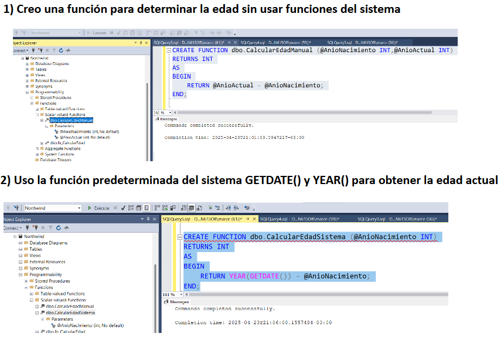

Sección 1
Contenido de la sección 1.
BASE DE DATOS:
CREAR BASE DE DATOS (CREATE DATABASE)
CREATE DATABASE test;
ELIMINAR BASE DE DATOS (DROP DATABASE)
DROP DATABASE test;
Estructura de datos
INSERTAR EN UNA TABLA (INSERT INTO)
INSERT INTO usuarios (usuario_id, nombre, apellido)
VALUES (8, 'María', 'López');
ACTUALIZAR TABLA (UPDATE)
UPDATE usuarios SET edad = '21' WHERE usuario_id = 4;
UPDATE usuarios SET edad = '20', init_date = '2020-10-12' WHERE usuario_id = 1;
ELIMINAR DE UNA TABLA (DELETE)
DELETE FROM usuarios WHERE usuario_id = 6;
TABLAS
CREAR UNA TABLA (CREATE TABLE)
CREATE TABLE persona (
id_persona INT PRIMARY KEY,
nombre VARCHAR(100),
apellido VARCHAR(100),
FOREIGN KEY (id_persona) REFERENCES usuarios(usuario_id)
);
CAMBIAR UNA TABLA (ALTER TABLE)
ALTER TABLE persona
MODIFY COLUMN nombre VARCHAR(250); -- Cambiar el tipo de datos de un campo
RENAME COLUMN apellido TO descripcion; -- Cambiar el nombre de un campo
ADD COLUMN idpersona INT NOT NULL PRIMARY KEY; -- Agregar un nuevo campo
ELIMINAR UNA TABLA (DROP TABLE)
DROP TABLE persona;
DROP COLUMN descripcion;
SINTAXIS
SELECT listaCampos
[ INTO nuevaTabla ]
FROM tablaOrigen
[ WHERE condicionFiltro ]
[ GROUP BY campoGrupo ]
[ HAVING filtroGrupo ]
[ ORDER BY campo/s [ ASC | DESC ] ]
Consultas en SQL:
INNER JOIN
SELECT * FROM users
INNER JOIN dni
ON users.user_id = dni.user_id;
Resultado de INNER JOIN
| User ID |
Nombre |
DNI |
| 1 |
Juan Pérez |
12345678 |
| 2 |
María López |
87654321 |
LEFT JOIN
SELECT * FROM users
LEFT JOIN dni
ON users.user_id = dni.user_id;
Resultado de LEFT JOIN
| User ID |
Nombre |
DNI |
| 1 |
Juan Pérez |
12345678 |
| 2 |
María López |
87654321 |
| 3 |
Pedro García |
NULL |
SELECT
Permite seleccionar columnas específicas de una tabla.
SELECT nombre, edad FROM Personas;
LIKE
Busca coincidencias con patrones de texto usando comodines:
% coincide con varios caracteres_ coincide con un solo carácter
SELECT * FROM Productos WHERE nombre LIKE 'C%';
| Tipo de coincidencia |
Modelo |
Coincide |
No coincide |
| Varios caracteres |
'a%a' |
'aa', 'aBa', 'aBXBa' |
'aBC' |
| Varios caracteres |
'ab%' |
'abcdefg', 'abc' |
'cab', 'aab' |
| Un solo carácter |
'a_a' |
'aaa', 'a3a', 'aBa' |
'aBBBa' |
| Un solo dígito |
'a[0-9]a' |
'a0a', 'a1a', 'a2a' |
'aaa', 'a10a' |
| Rango de caracteres |
'[a-z]' |
'f', 'p', 'j' |
'2', '&' |
| Fuera de un rango |
'[^a-z]' |
'9', '&', '%' |
'b', 'a' |
| Distinto de un dígito |
'[!0-9]' |
'A', 'a', '&', '~' |
'0', '1', '9' |
| Combinada |
'a[^b-m]#' |
'An9', 'az0', 'a99' |
'abc', 'aj0' |
BETWEEN
El operador BETWEEN se utiliza para filtrar valores dentro de un rango determinado (inclusive). Funciona con números, fechas o texto.
SELECT * FROM tabla
WHERE columna BETWEEN valor1 AND valor2;
BACKUP Y RESTORE
Son operaciones de mantenimiento o administración de bases de datos,backup hace una copia de seguridad de la base de datos para proteger los datos
y restore restaura una base de datos a partir de un backup previo.
BACKUP DATABASE NombreDeLaBase
TO DISK = 'C:\Backups\NombreDeLaBase.bak';
RESTORE DATABASE NombreDeLaBase
FROM DISK = 'C:\Backups\NombreDeLaBase.bak';
Funciones de Agregado
Operan sobre conjuntos de datos:
COUNT
SELECT COUNT(*) FROM Empleados;
SELECT AVG(salario) FROM Empleados;
GROUP BY
Agrupa datos para usarlos con funciones de agregado.
SELECT departamento, AVG(salario)
FROM Empleados
GROUP BY departamento;
HAVING
Filtra resultados después de agrupar.
SELECT departamento, AVG(salario)
FROM Empleados
GROUP BY departamento
HAVING AVG(salario) > 50000;
DISTINCT
Elimina duplicados en los resultados.
SELECT DISTINCT ciudad FROM Clientes;
TOP
Limita la cantidad de resultados.
SELECT TOP 5 * FROM Productos ORDER BY precio DESC;
CASE
SELECT
nombre,
CASE
WHEN edad >= 18 THEN 'Adulto'
ELSE 'Menor'
END AS tipoPersona
FROM Persona;
BUCLES
IF, WHILE, FOR: se usan dentro de procedimientos almacenados (Stored Procedures)
IF
DECLARE @edad INT = 20;
IF @edad >= 18
PRINT 'Es mayor';
ELSE
PRINT 'Es menor';
WHILE
DECLARE @contador INT = 1;
WHILE @contador <= 5
BEGIN
PRINT 'Contador: ' + CAST(@contador AS VARCHAR);
SET @contador = @contador + 1;
END
FOR
No existe como palabra clave, pero se puede lograr algo similar con cursores:
DECLARE cursor_libros CURSOR FOR
SELECT titulo FROM Libro;
OPEN cursor_libros;
FETCH NEXT FROM cursor_libros INTO @titulo;
WHILE @@FETCH_STATUS = 0
BEGIN
PRINT @titulo;
FETCH NEXT FROM cursor_libros INTO @titulo;
END
CLOSE cursor_libros;
DEALLOCATE cursor_libros;
Tipos de JOIN en SQL
Ejemplos concretos de JOIN en SQL
Vamos a trabajar con estas dos tablas de ejemplo:
Tabla Empleados
| idEmpleado |
nombre |
idDepto |
| 1 |
Ana |
10 |
| 2 |
Luis |
20 |
| 3 |
Marta |
NULL |
Tabla Departamentos
| idDepto |
nombreDepto |
| 10 |
Finanzas |
| 20 |
Marketing |
| 30 |
IT |
Resultados según tipo de JOIN
| JOIN |
Consulta |
Resultado esperado |
| INNER JOIN |
SELECT e.nombre, d.nombreDepto FROM Empleados e INNER JOIN Departamentos d ON e.idDepto = d.idDepto;
|
Ana - Finanzas
Luis - Marketing
|
| LEFT JOIN |
SELECT e.nombre, d.nombreDepto FROM Empleados e LEFT JOIN Departamentos d ON e.idDepto = d.idDepto;
|
Ana - Finanzas
Luis - Marketing
Marta - NULL
|
| RIGHT JOIN |
SELECT e.nombre, d.nombreDepto FROM Empleados e RIGHT JOIN Departamentos d ON e.idDepto = d.idDepto;
|
Ana - Finanzas
Luis - Marketing
NULL - IT
|
| FULL JOIN |
SELECT e.nombre, d.nombreDepto FROM Empleados e FULL JOIN Departamentos d ON e.idDepto = d.idDepto;
|
Ana - Finanzas
Luis - Marketing
Marta - NULL
NULL - IT
|
| CROSS JOIN |
SELECT e.nombre, d.nombreDepto FROM Empleados e CROSS JOIN Departamentos d; |
Ana - Finanzas
Ana - Marketing
Ana - IT
Luis - Finanzas
Luis - Marketing
Luis - IT
Marta - Finanzas
Marta - Marketing
Marta - IT
|
¿Qué hace cada tipo de JOIN?
✅ INNER JOIN
Trae solo los registros que coinciden en ambas tablas.
Ejemplo: Empleados con un departamento válido existente.
👈 LEFT JOIN
Trae todos los registros de la tabla izquierda, aunque no tengan coincidencia en la
derecha.
Ejemplo: Todos los empleados, incluso los que no tienen departamento (depto será
NULL).
👉 RIGHT JOIN
Trae todos los registros de la tabla derecha, aunque no tengan coincidencia en la
izquierda.
Ejemplo: Todos los departamentos, incluso los que no tienen empleados.
🔄 FULL JOIN
Une todo de ambas tablas. Si no hay coincidencia, muestra NULL en lo que
falta.
Ejemplo: Empleados y departamentos, aunque no estén relacionados.
🔢 CROSS JOIN
Crea todas las combinaciones posibles entre las filas de ambas tablas.
Ejemplo: 3 empleados y 3 departamentos = 9 combinaciones posibles.

Introducción a SQL Server
SQL Server es un sistema de gestión de bases de datos relacional (RDBMS) desarrollado por
Microsoft.
Se utiliza para almacenar y recuperar datos cuando lo requieren otras aplicaciones, ya sea en un entorno local o
en la nube.
- Lenguaje: Utiliza T-SQL (Transact-SQL), una extensión de SQL estándar.
- Componentes principales:
- Motor de base de datos: Procesa solicitudes de datos.
- Herramientas de administración: SQL Server Management Studio (SSMS).
- Servicios adicionales: Reporting Services (SSRS), Integration Services (SSIS), Analysis
Services (SSAS).
- Ventajas: Alta seguridad, escalabilidad, integración con el ecosistema de Microsoft.
- Versiones: Express, Standard, Enterprise, Developer (gratuita para pruebas).
Es ideal para aplicaciones empresariales que requieren gestión robusta de datos, consultas avanzadas, y
funcionalidades como transacciones, seguridad y replicación.
¿ QUE ES UN MOTOR DE BD?
Motor de BDD es el componente principal que se instala como un servicio en sistemas operativos para almacenar,
procesar y proteger los datos.
Proporciona acceso controlado y procesamiento
rápido de transacciones para cumplir los
requisitos de las aplicaciones consumidoras
de datos más exigentes de la empresa.
¿Qué es Transact-SQL (T-SQL)?
- Es el lenguaje de programación que se emplea para mandar peticiones entre el cliente y el servidor.
- Es un lenguaje exclusivo de SQL Server, pero basado en el lenguaje SQL estándar (ANSI SQL), utilizado por casi todos los tipos de bases de datos relacionales que existen.
Tiene ventajas como:
- Uso de variables y estructuras de control (
IF, WHILE).
- Creación de procedimientos almacenados, funciones y triggers.
- Control de errores con
TRY...CATCH.
Es el lenguaje que el cliente usa para enviar instrucciones al servidor SQL Server. Solo está disponible para
este sistema.
-- Ejemplo simple de T-SQL con variables
DECLARE @Nombre NVARCHAR(50)
SET @Nombre = 'Ana'
SELECT * FROM Empleados WHERE nombre = @Nombre
Caracteristicas del SQL
SQL proporciona dos tipos de sentencias diferentes:
1.Especificar el esquema relacional: DDL(DATA DEFINITION LANGUAGE)
Las sentencias DDL permiten crear(CREATE), modificar(ALTER) y eliminar(DROP) objetos de la base de datos, como tablas, índices y Permisos(GRANT Y REVOKE)
2.Expresar las consultas y
actualizaciones de la base de datos:
DML(DATA MANIPULATION LANGUAGE)
Permite la recuperación de información (SELECT),Inserción de nueva información
(INSERT),modificación de información almacenada (UPDATE),Eliminación (borrado) de información existente (DELETE)
DISEÑO DE LA BASE DE DATOS
- Cuando se utiliza una base de datos para gestionar información, se está plasmando una parte del mundo real en una serie de tablas, registros y campos ubicados en una computadora, creándose un modelo parcial de la realidad.
- Antes de crear físicamente estas tablas se debe realizar un modelo de datos, llamado de entidad-relación
ENTIDAD
- Una entidad es cualquier "objeto" discreto sobre el que se tiene información.
- Cada ejemplar de una entidad se denomina instancia.
- Las entidades son modeladas en la base de datos como tablas.
RELACIÓN
- Una relación describe cierta interdependencia (de cualquier tipo) entre una o más entidades.
- Una relación no tiene sentido sin las entidades que relaciona.
- Las relaciones son definidas con claves primarias y claves foráneas, manteniendo la integridad referencial.
CARNALIDAD DE LAS RELACIONES
- Una relación describe cierta interdependencia (de cualquier tipo) entre una o más entidades.
- Relaciones de uno a uno: una instancia de la entidad a se relaciona con una y solamente una de la entidad b.
- Relaciones de uno a muchos: cada instancia de la entidad a se relaciona con varias instancias de la entidad b.
- Relaciones de muchos a muchos: cualquier instancia de la entidad a se relaciona con cualquier instancia de la entidad b.
Relaciones y Claves Foráneas
En bases de datos relacionales, una relación define cómo se conectan los datos entre distintas
tablas. Las relaciones más comunes son:
- Uno a uno: Un registro de una tabla se relaciona con un solo registro de otra.
- Uno a muchos: Un registro de una tabla puede estar relacionado con varios registros de otra
(muy común).
- Muchos a muchos: Requiere una tabla intermedia para unir ambas.
Una clave foránea (foreign key) es un campo que conecta dos tablas, asegurando la integridad
referencial.
-- Crear tabla Departamentos
CREATE TABLE Departamentos (
idDepto INT PRIMARY KEY,
nombreDepto VARCHAR(50)
)
-- Crear tabla Empleados con clave foránea
CREATE TABLE Empleados (
idEmpleado INT PRIMARY KEY,
nombre VARCHAR(50),
idDepto INT FOREIGN KEY REFERENCES Departamentos(idDepto)
)
ATRIBUTOS
- Las entidades tienen atributos.
- Un atributo de una entidad representa alguna propiedad
- En el modelo de bases de datos, los atributos son almacenados como columnas o campos de una tabla.
MODELADO DE ELEMENTOS DE DATOS
- SQL emplea tablas como objetos de almacenamiento de datos, que los usuarios manipulan a través de sus aplicaciones.
- Las tablas son objetos compuestos por una estructura (conjunto de columnas) que almacenan información interrelacionada (filas) acerca de algún objeto en general.
MODELADO DE ELEMENTOS DE DATOS-CARACTERISTICAS
- Las tablas tienen un solo nombre y es único en toda la base datos.
- Están compuestas por registros y campos.
- Los registros y campos pueden estar en diferentes órdenes.
- Una base de datos contiene muchas tablas. cada tabla almacena información.
RESTRICCIONES
- Los nombres de las tablas deben ser únicos en la base de datos.
- Los nombres de las columnas deben ser únicos en la tabla.
- No puede haber dos registros con el mismo valor de la clave primaria.(Primary key – pk – clave principal)
Dentro de las restricciones que podemos establecer desde el diseño de los campos, además del tipo de datos son:
NO ADMITA VALORES NULOS
NO ADMITA VALORES DUPLICADOS
CLAVE PRIMARIA (PRIMARY KEY)
- Es un campo o un grupo de campos que fuerzan la integridad de los datos en la tabla, asegurándose que cada registro en la tabla es único.
- Solo puede haber una sola clave primaria por tabla.
- La clave primaria no permite valores nulos o duplicados.
- Se crea un índice al definir una clave primaria.
CLAVE FORANEA (FOREIGN KEY)
- Es un campo que permite establecer un vínculo entre las tablas, en general , se ubican en las tablas del lado de “muchos”, ya que este campo se puede repetir.
ACCESO A LAS BASES DE DATOS
El acceso para trabajar con las bases de
datos, en nuestro caso sql sever, debemos,
ademas del motor, tener instalado un IDE para
el manejo de los datos, nosotros tenemos
instalado el sql server managment studio
express ( gratuito) para sencillas aplicaciones
y educación.
Para acceder al motor de sql y sus bases de datos existen 2 maneras:
- Con credenciales de Windows (S.O.): Este tipo de acceso se denomina “integrado con windows” o autenticacion de windows”, y no requiere usuario y password.
- Con credenciales de sql server: Este tipo de acceso se denomina autenticación de sql server ”, y requiere un usuario de sql registrado y una contraseña.
FORMAS NORMALES EN LAS BASES DE DATOS
La normalización de bases de datos es un proceso que consiste en designar y aplicar una serie de reglas a las relaciones obtenidas tras el paso del modelo entidad-relación al modelo relacional.
Es un proceso para organizar las tablas de una base de datos de forma lógica, dividiendo la información en partes más pequeñas y eliminando duplicaciones.
Las bases de datos relacionales se normalizan para:
- Evitar la redundancia de los datos.
- Disminuir problemas de actualización de los datos en las tablas.
- Proteger la integridad de los datos.
Formas Normales (1FN, 2FN, 3FN)
La normalización es el proceso de organizar los datos en una base de datos para reducir la redundancia y mejorar la integridad de los datos. Las tres primeras formas normales (1FN, 2FN y 3FN) son las más comunes y suficientes en la mayoría de los casos.
📦 Primera Forma Normal (1FN)
- Todos los atributos deben contener valores atómicos (un solo valor por celda).
- No debe haber columnas con listas o grupos repetitivos.
- Se encuentra en 1FN si todo atributo contiene un valor indivisible o atomico (ausencia de grupos repetitivos).
Ejemplo NO cumple 1FN:
| Cliente | Teléfonos |
|---|
| Ana | 1111, 2222 |
| Juan | 3333, 4444, 5555 |
Ejemplo corregido (1FN cumplida):
| Cliente | Teléfono |
|---|
| Ana | 1111 |
| Ana | 2222 |
| Juan | 3333 |
| Juan | 4444 |
| Juan | 5555 |
✌️ Segunda Forma Normal (2FN)
- Ya debe cumplir 1FN.
- Todos los atributos no clave deben depender de toda la clave primaria.
- Una tabla que está en la primera forma normal (1NF) debe satisfacer criterios adicionales para calificar para la segunda forma normal.
- Específicamente: una tabla 1NF está en 2NF si y solo si, dada una clave primaria y cualquier campo que no sea un constituyente de la clave primaria, el campo NO clave depende de toda la clave primaria y no solo de una parte.
Ejemplo NO cumple 2FN:
| ID_Curso | ID_Alumno | NombreAlumno | NombreCurso |
|---|
| 1 | 101 | Ana | SQL Básico |
| 1 | 102 | Juan | SQL Básico |
Solución (dividir en dos tablas):
Cursos
| ID_Curso | NombreCurso |
|---|
| 1 | SQL Básico |
Alumnos_Curso
| ID_Curso | ID_Alumno | NombreAlumno |
|---|
| 1 | 101 | Ana |
| 1 | 102 | Juan |
🔺 Tercera Forma Normal (3FN)
- Ya debe cumplir 2FN.
- No debe haber dependencias transitivas (un atributo no clave no debe depender de otro no clave).
Ejemplo NO cumple 3FN:
| ID_Empleado | Nombre | ID_Departamento | NombreDepartamento |
|---|
| 1 | Ana | 10 | Recursos Humanos |
Solución (dividir en dos tablas):
Empleados
| ID_Empleado | Nombre | ID_Departamento |
|---|
| 1 | Ana | 10 |
Departamentos
| ID_Departamento | NombreDepartamento |
|---|
| 10 | Recursos Humanos |
🧠 Resumen de las Formas Normales
| Forma | Qué evita | Regla principal |
|---|
| 1FN | Valores múltiples por celda | Solo un valor por campo |
| 2FN | Dependencia parcial | Todos los campos dependen de toda la clave |
| 3FN | Dependencia transitiva | Ningún campo no clave depende de otro no clave |
Operadores Lógicos en SQL
Los operadores lógicos se usan en la cláusula WHERE para combinar condiciones.
- AND: Devuelve resultados si todas las condiciones son verdaderas.
- OR: Devuelve resultados si alguna condición es verdadera.
- IN: Verifica si un valor está en una lista.
-- Empleados que trabajan en los departamentos 1, 2 o 3
SELECT * FROM Empleados WHERE idDepto IN (1, 2, 3)
-- Empleados que se llaman Ana y están en el depto 2
SELECT * FROM Empleados WHERE nombre = 'Ana' AND idDepto = 2
-- Empleados que están en el depto 1 o se llaman Juan
SELECT * FROM Empleados WHERE idDepto = 1 OR nombre = 'Juan'
Funciones en SQL Server
En SQL Server, una función es un bloque de código reutilizable que puede recibir parámetros y
devolver un valor. Se utilizan para realizar cálculos o transformar datos.
Tipos de funciones
- Funciones escalares: Devuelven un solo valor (por ejemplo: fecha, número, texto).
- Funciones de agregado: Operan sobre un conjunto de filas y devuelven un único valor.
- Funciones de sistema: Incluidas por SQL Server para tareas comunes.
- Funciones definidas por el usuario (UDF): Creadas por el usuario.
Ejemplos comunes
-- Función escalar: convierte a mayúsculas
SELECT UPPER('hola mundo') -- Resultado: HOLA MUNDO
-- Función de fecha: día actual
SELECT GETDATE() -- Resultado: fecha y hora actual
-- Función de agregado: suma total de sueldos
SELECT SUM(sueldo) FROM Empleados
-- Función definida por el usuario (ejemplo simple)
CREATE FUNCTION dbo.SumarDosNumeros (@a INT, @b INT)
RETURNS INT
AS
BEGIN
RETURN @a + @b
END
-- Uso de función definida por el usuario
SELECT dbo.SumarDosNumeros(5, 3) -- Resultado: 8
Las funciones son muy útiles para reutilizar lógica, realizar cálculos personalizados o limpiar datos dentro de
consultas SQL.
Sección 2
Contenido de la sección 2.
Funciones avanzadas en SQL Server
En SQL Server existen diferentes tipos de funciones que permiten trabajar con números, fechas, cadenas y datos
agrupados. A continuación, se detallan las más usadas con ejemplos.
Definición:
- Una función es un conjunto de sentencias que operan como una unidad lógica.
- Una función tiene un nombre, retorna un valor de salida y opcionalmente acepta parámetros de entrada.
Funciones del sistema
- Son las que trae incorporadas el motor de SQL Server Por ejemplo: GETDATE()
Funciones definidas por el usuario (UDFs)
- Son las que creamos para encapsular lógica que necesitamos aplicar.
- Las funciones de SQL Server no pueden ser modificadas, las funciones definidas por el usuario si.
Funciones de Configuración
- Son funciones que devuelven valores relacionados con la configuración del sistema, del usuario o de la sesión actual.
🔢 Funciones de agregado (devuelven un valor a partir de muchas filas)
- COUNT: Cuenta la cantidad de filas.
SELECT COUNT(*) FROM Empleados;
- SUM: Suma los valores de una columna.
SELECT SUM(Sueldo) FROM Empleados;
- MIN / MAX: Mínimo o máximo valor.
SELECT MIN(Edad), MAX(Edad) FROM Empleados;
- AVG : Se utiliza para obtener el valor promedio de una columna numérica.
SELECT AVG(edad) FROM Empleados;
Definicion de funcion de agregado:
- Realizan un cálculo sobre un conjunto de valores y retornan un único valor.
📅 Conversión de tipos (funciones escalares)
- CAST: Convierte de un tipo a otro.
SELECT CAST(GETDATE() AS VARCHAR);
- DECLARE: Se usa para declarar variables en SQL.
DECLARE @dato VARCHAR(2), @dato2 INT;
Definicion de funcion escalar:
- Toman un solo valor y retornan un único valor (como un número, cadena, fecha, etc.).
- Se puede usar en SELECT, WHERE, ORDER BY, etc.
📅 Funciones de Fecha y Hora (SQL Server)
Estas funciones forman parte de las funciones escalares, ya que devuelven un solo valor.
Permiten trabajar con fechas, extraer partes de ellas, modificarlas o convertirlas a texto.
✅ Obtener la fecha y hora actual
GETDATE(): Devuelve la fecha y hora actual del sistema.
SELECT GETDATE();
SYSDATETIME(): Igual que GETDATE pero con mayor precisión.CURRENT_TIMESTAMP: Funciona igual que GETDATE (estándar ANSI).GETUTCDATE(): Devuelve la hora actual en formato UTC.
🕒 Extraer partes de una fecha
DAY(fecha): Devuelve el día del mes.
SELECT DAY(GETDATE());MONTH(fecha): Devuelve el mes.YEAR(fecha): Devuelve el año.DATEPART(parte, fecha): Extrae una parte específica (día, hora, mes, etc).
SELECT DATEPART(hour, GETDATE());
🔄 Modificar fechas
DATEADD(parte, cantidad, fecha): Suma/resta a una fecha.
SELECT DATEADD(day, 7, GETDATE()); (suma 7 días)
DATEDIFF(parte, fecha1, fecha2): Diferencia entre dos fechas.
SELECT DATEDIFF(day, '2025-01-01', GETDATE());
EOMONTH(fecha): Último día del mes.
SELECT EOMONTH(GETDATE());
🔁 Conversión de fecha a texto
CAST(valor AS tipo): Convierte el tipo de dato.
SELECT CAST(GETDATE() AS VARCHAR);
CONVERT(tipo, valor, estilo): Convierte con formato específico.
SELECT CONVERT(VARCHAR, GETDATE(), 103); (formato dd/mm/yyyy)
🧪 Ejemplo completo
SELECT
GETDATE() AS FechaActual,
CAST(GETDATE() AS VARCHAR) AS FechaTexto,
YEAR(GETDATE()) AS Anio,
DATEADD(day, 30, GETDATE()) AS FechaEn30Dias,
DATEDIFF(day, '2025-01-01', GETDATE()) AS DiasDesdeInicioAno;
🔠 Funciones de cadena (funciones escalares)
Sirven para manipular texto. Estas son muy comunes:
- SUBSTRING(cadena, inicio, cantidad): Devuelve una parte de la cadena especificada como primer argumento, empezando desde la posición especificada por el segundo argumento y de tantos caracteres de longitud como indica el tercer argumento.
SELECT SUBSTRING('Hola Mundo', 1, 4); -- Resultado: Hola
- CHARINDEX(buscar, cadena[, inicio]): Busca una subcadena dentro de una cadena a partir de una ubicación especificada. Devuelve la posición de la subcadena encontrada en la cadena buscada, o cero si no se encuentra la subcadena. La posición inicial devuelta se basa en 1, no en 0.
SELECT CHARINDEX('OM', 'Customer'); -- Resultado: 5
- PATINDEX(patrón, cadena): Devuelve la posición de comienzo (de la primera ocurrencia) del patrón especificado en la cadena enviada como segundo argumento. Si no la encuentra retorna 0.
SELECT PATINDEX('%mer%', 'Customer'); -- Resultado: 5
- LEFT(cadena, n): Devuelve los primeros n caracteres.
SELECT LEFT('Customer', 4); -- Resultado: Cust
- RIGHT(cadena, n): Devuelve los últimos n caracteres.
SELECT RIGHT('Customer', 2); -- Resultado: er
- LEN(cadena): Devuelve la longitud del texto.
SELECT LEN('Hola'); -- Resultado: 4
- CHAR(X): Retorna un caracter en código ASCII del entero enviado como argumento.
SELECT char(65); retorna "A".
- REVERSE(cadena): Invierte el texto.
SELECT REVERSE('Hola'); -- Resultado: aloH
- LOWER(cadena): Convierte todo a minúsculas.
SELECT LOWER('HOLA ESTUDIAnte'); -- Resultado: hola estudiante
- UPPER(cadena): Convierte todo a mayúsculas.
SELECT UPPER('Hola'); -- Resultado: HOLA
- STR(numero,longitud,cantidadDecimales): números a caracteres; el primer parámetro indica el valor numérico a convertir, el segundo la longitud del resultado (debe ser mayor o igual a la parte entera del número más el signo si lo tuviese) y el tercero, la cantidad de decimales. El segundo y tercer argumento son opcionales y deben ser positivos.
SELECT str(123456.67,7,3)
- LTRIM(cadena): Quita espacios a la izquierda.
SELECT LTRIM(' Hola '); -- Resultado: 'Hola '
- RTRIM(cadena): Quita espacios a la derecha.
SELECT RTRIM(' Hola '); -- Resultado: ' Hola'
- REPLACE(cadena, buscar, reemplazo): Reemplaza partes del texto.
SELECT REPLACE('xxx.unlam.edu.ar','x','w'); -- Resultado: www.unlam.edu.ar
- REPLICATE(cadena, n): Repite una cadena varias veces.
SELECT REPLICATE('Hola ', 3); -- Resultado: Hola Hola Hola
- SPACE(n): Devuelve n espacios en blanco.
SELECT 'Hola' + SPACE(3) + 'Mundo'; -- Resultado: Hola Mundo
📚 Clasificación de funciones
- Funciones escalares: Devuelven un solo valor (ej: UPPER, LEN, GETDATE, CAST).
- Funciones de agregado: Operan sobre varias filas (ej: COUNT, SUM, AVG, MAX).
- Funciones de sistema: Ya vienen con SQL Server (ej: GETDATE, SCOPE_IDENTITY).
- Funciones definidas por el usuario (UDF): Creadas por vos o tu equipo.Son las que creamos para encapsular lógica que necesitamos aplicar.
Las funciones de SQL Server no pueden ser modificadas, las funciones definidas por el usuario si.
Ejemplo de funcion definida por el usuario

Funciones de configuracion
Son funciones que devuelven valores relacionados con la configuración del sistema, del usuario o de la sesión actual.
- SELECT @@VERSION AS VersionSQL; -- Retorna la fecha, versión y tipo de procesador de SQL Server. Reemplaza partes del texto.
- SELECT DB_NAME() AS BaseDatosActual; -- Retorna la base de datos actual
- SELECT HOST_NAME() AS Cliente; -- Retorna el nombre del equipo que se conecta
Sección 3
Contenido de la sección 3.
Dos categorías de aplicaciones de BD
- Proceso de transacciones en línea(OLTP, Online Transaction Processing): Datos que cambian con frecuencia.
Estas aplicaciones cuentan normalmente con muchos usuarios que realizan transacciones al mismo tiempo que
cambian datos en tiempo real. Alto grado de normalización, dosificación de índices, ubicación correcta de los
datos y pocos datos históricos.
- Ayuda a la toma de decisiones (OLAP, OnLine Analytical Processing): son óptimas para las consultas de datos
que no impliquen cambios frecuentes en los mismos. Poca normalización, muchos índices y datos preprocesados,.
Base de Datos del Sistema
Estas bases vienen preinstaladas con SQL Server y son cruciales para su funcionamiento interno. No son creadas por el usuario, y cada una cumple un rol específico:
- Master:Guarda toda la información vital del servidor: inicio de sesión, configuración, metadatos de todas las bases de datos. Si se daña, SQL Server no arranca.Realizan el seguimiento de la instalación del servidor y de todas las bases de datos que se creen posteriormente.
- Tempdb:Se usa como área de trabajo temporal. Se borra y se recrea cada vez que arranca SQL Server. Ahí van las tablas temporales, ordenamientos, etc.
- Model:Se utiliza como plantilla para todas las bases de datos creadas en un sistema. Cuando se ejecuta una instrucción CREATE DATABASE, la primera parte de la base de datos se crea copiando el contenido de la base de datos model, el resto de la nueva base de datos se llena con páginas vacías
- Msdb:Es empleada por los servicios SQL Server Agent, Database Mail, Service Broker, log shipping, etc. para guardar información con respecto a tareas de automatización como por ejemplo copias de seguridad y tareas de duplicación, asimismo solución a problemas
Vistas del Catalogo
Todos los metadatos del catálogo disponiblespara el usuario se exponen mediante las vistas de catálogo. Las
vistas de catálogo de SQL Server se han organizado en varias categorías.
- Vistas de catálogo de archivos y bases de datos: Por ejemplo:
- sys.databases que devuelve un registro por cada base de datos
- sys.database_files que devuelve un registro por cada archivo de una base de datos.
- Objetos: Por ejemplo:
- sys.tables que devuelve un registro por cada tabla de una base de datos.
- sys.views que devuelve un registro por cada vista de una base de datos.
- sys.columns que devuelve un registro por cada columna de un objeto.
- Seguridad: Por ejemplo:
- sys.database_permissions que devuelve un registro por cada permiso definido en una base de datos.
- sys.database_role_member que devuelve un registro por cada miembro de un rol de una base de datos.
FUNCIONES DEL SISTEMA
Devuelven información acerca de la base de datos y de los objetos de la misma. Solo se mencionan algunas de
ellas:
DB_ID:Devuelve el número de identificación (Id.) de esa base de datos.
SELECT DB_ID('master') Devuelve 1
DB_NAME:Devuelve el nombre de la base de datos.SELECT DB_NAME(1) Devuelve master
FILE_ID:Devuelve el número de identificación del archivo (Id.) del nombre de archivo lógico dado de la base de datosactual.SELECT FILE_ID('AdventureWorks_Data') Devuelve 1
FILE_NAME:Devuelve el nombre del archivo lógico dado de la base de datos actual.SELECT FILE_NAME(1) Devuelve AdventureWorks_Data
Procedimientos Almacenados de Sistema
Estos son algunos de los procedimientos almacenados de sistema que permiten consultar información sobre base
de datos:
Sp_Databases: Lista las bases de datos disponibles de un Server
Sp_Databases
Sp_HelpDB:Información sobre las bases de datos de un servidor
Sp_Help:Presenta información acerca de un objeto de base de datos(cualquier objeto de la vista de compatibilidad sys.sysobjects), un tipo de datos definido por el usuario o un tipo de datos. Puede ejecutarse sin parámetros, entonces muestra la información sobre todos los objetos o puede pasarse como parámetro el nombre del objeto a consultar.
GRUPOS DE ARCHIVOS
Son parte de la estructura física de la base de datos.
Las bases de datos de SQL Server utilizan tres tipos de archivos:
Archivos de datos principales:Es el punto de partida de la base de datos y apunta a los otros archivos de la base de datos. Cada base de datos tiene un archivo de datos principal. La extensión recomendada para los nombres de archivos de datos principales es .mdf.
Archivos de datos secundarios:Son todos los archivos de datos menos el archivo de datos principal.Puede que algunas bases de datos no tengan archivos de datos secundarios, mientras que otras pueden tener varios archivos de datos secundarios. La extensión de nombre de archivo recomendada para los archivos de datos secundarios es .ndf.
Archivos de registro:almacenan toda la información de registroque se utiliza para recuperar la base de datos. Como mínimo, tiene que haber un archivo de registro por cada base de datos, aunque puede haber varios. La extensión de nombre de archivo recomendada para los archivos de registro es .ldf.
SQL Server no exige las extensiones de nombre de archivo .mdf, .ndf y .ldf, pero estas extensiones ayudan a
identificar las distintas clases de archivos y su uso.
ESQUEMAS (SCHEMAS)
Definición:
Es un espacio de nombres (namespace) distintoque existe de forma independientemente del usuario de base de
datos que lo creó. Es un contenedor de objetos. Cualquier usuario puede ser propietario de un esquema, y esta
propiedad es transferible. Todas las bases de datos contienen un esquema llamado dbo. Es el esquema
predeterminado para todos los usuarios cuando no se define explícitamente el esquema.
Ejemplo: CREATE SCHEMA Ventas
Ventajas
- Mayor flexibilidad para organizar la base de datosusando nombres de espacio, ya que de esta manera los
objetos no dependen del usuario que lo creo.
- Manejo de permisos mejorada, ya que los permisos pueden ser asignados a los esquemas y no directamente a
cada objeto.
- Al dar de baja un usuario no es necesario renombrar los objetos que le pertenecían.
Instantáneas de Base de Datos
- Es una vista estática de sólo lecturade una base de datos denominada base de datos de origen
- Se mantiene hasta que el propietario de la base de datos la quita explícitamente.
- Deben residir en la misma instancia de servidor que la base de datos
- Se pueden utilizar para crear informes. Además, en el caso de que se produzca un error de usuario en una
base de datos de origen, ésta se puede revertir al estado en que se encontraba cuando se creó la
instantánea.
Tipos de restricciones
- PRIMARY KEY
- UNIQUE
- FOREIGN KEY
- CHECK
- DEFAULT
Sección 4
Contenido de la sección 4.
Argumentos
Parámetros de creación de base de datos:
- Nombre_BaseDatos: Nombre lógico de la base de datos
- ON: Especifica la información sobre el archivo de datos
- LOG ON: Especifica la información sobre el archivo del registro de transacciones.
- Collate: Establece el juego de caracteres soportados.
- Primary: Especifica el grupo de archivos (filegroup) para este archivo. El grupo de archivo base del SQL
Server se llama Primary.
- FileName: Nombre físico del archivo para el sistema operativo
- Size: Tamaño inicial de la base de datos. Si no se especifica es de 1MB.
- MaxSize: Tamaño máximo para la base de datos. Si no se especifica la base de datos puede crecer hasta
llenar el disco.
- FileGrowth: Especifica el incremento de crecimiento de la base de datos
Opciones de BD
Opciones de configuración de la base de datos:
- AUTO_CREATE_STATISTICS: Crea estadísticas en forma automática necesarias para la optimización de
consultas. El valor predeterminado es ON.
- AUTO_UPDATE_STATISTICS: Actualiza automáticamente las estadísticas que están desactualizadas. El valor
predeterminado es ON.
- AUTO_CLOSE: Si está en ON cierra la base de datos automáticamente cuando el último usuario cierra su
sesión. El valor predeterminado es OFF (excepto para la edición Express)
- AUTO_SHRINK: Si está en ON la base de datos se encoge automáticamente en forma periódica. El valor
predeterminado es OFF.
- READ_ONLY / READ_WRITE: Controla si los usuarios pueden modificar los datos. El valor predeterminado es
READ_WRITE.
- SINGLE_USER / RESTRICTED_USER / MULTI_USER: SINGLE_USER, sólo se puede conectar un usuario a la base de
datos en un momento dado. RESTRICTED_USER, sólo pueden conectarse a la base de datos los miembros de la
función fija de base de datos db_owner y los de las funciones fijas de servidor dbcreator y sysadmin, pero
no se limita la cantidad de miembros. MULTI_USER, se permite el acceso de todos los usuarios que cuenten con
los permisos adecuados para conectarse a la base de datos.
- RECOVERY MODEL: FULL / SIMPLE / BULK_LOGGED: El valor predeterminado es FULL. Provee un modelo de
recuperación completo ante fallas. BULK_LOGGED no usa el registro de transacciones para ese tipo de
movimiento. SIMPLE recupera la base de datos solo desde el último backup completo o diferencial.
- PAGE_VERIFY: Permite detectar entradas de E/S incompletas. CHECKSUM: guarda un valor calculado en la
cabecera de la página basado en su contenido. Este valor es recalculado y comparado con los datos de la
página para controlarlas.
- SQL ANSI_NULL_DEFAULT: Permite al usuario controlar el uso predeterminado del valor nulo de una columna al
crear o modificar una tabla. El valor predeterminado es OFF o sea NOT NULL.
- ANSI_NULLS: Cuando está en ON, todas las comparaciones con nulos devuelven nulos. Si está en OFF solo
devuelve nulo si ambos valores son nulos. El valor predeterminado es OFF
- QUOTED_IDENTIFIER: Cuando se especifica ON, se pueden utilizar comillas dobles para encerrar los
identificadores delimitados. Cuando se especifica OFF, los identificadores no pueden ir entre comillas y
deben adaptarse a todas las reglas de Transact-SQL que se aplican a los identificadores (Usar [] para
delimitar identificadores).
Sección 5
Contenido de la sección 5.
Indices
Un índice es una estructura que acelera la búsqueda de datos en una tabla, similar a cómo un índice de un libro te ayuda a encontrar temas rápidamente.
- Facilitan la obtención de información de una tabla.Una tabla se indexa por un campo (o varios).
- Posibilita el acceso directo y rápido haciendo más eficiente las búsquedas. Sin índice, SQL Server debe
recorrer secuencialmente toda la tabla para encontrar un registro.
- Acelera la recuperación de información.
- Optimiza el acceso a los datos, mejora el rendimiento acelerando las consultas y otras operaciones.
SQL Server accede a los datos de dos maneras:
- recorriendo las tablas;comenzando el principio y extrayendo los registros que cumplen las condiciones de la
consulta.
- empleando índices; recorriendo la estructura de árbol del índice para localizar los registros y extrayendo los
que cumplen las condiciones de la consulta.
La desventaja es que consume espacio en disco y genera costo de mantenimiento (tiempo y recursos).
Los índices más adecuados son aquellos creados con campos que contienen valores únicos.
Es importante identificar el o los campos por los que sería útil crear un índice, aquellos campos por los cuales
se realizan búsqueda con frecuencia: claves primarias, claves externas o campos que combinan tablas.
No se recomienda crear índices por campos que no se usan con frecuencia en consultas o no contienen valores
únicos.
SQL Server permite crear 2 tipos de índices:
- 1) Índice Agrupado (Clustered Index):Ordena físicamente los datos en la tabla y la tabla queda organizada en base a ese índice, como si fuera una guía telefónica.
Caractericticas clave: Solo puede haber uno por tabla (porque los datos físicos solo pueden estar ordenados de una manera).
Ideal para consultas que usan rangos, ordenamientos o filtrado frecuente sobre ese campo.
Se crea automáticamente si hacés una PRIMARY KEY (si no especificás lo contrario).
Ejemplo común de uso: buscar todos los productos ordenados por precio o fechas.
- 2) Índice No Agrupado (Nonclustered Index):El índice está separado de los datos reales, como el índice de un libro que te dice en qué página está un tema y contiene punteros que apuntan al lugar exacto donde están los datos en la tabla.
Características clave:Una tabla puede tener muchos índices no agrupados (hasta 249).Ideal para columnas que se buscan seguido pero no ordenan toda la tabla, como un código, un email o una identificación.Se crea automáticamente cuando hacés una UNIQUE (si no es clustered).
Ejemplo común de uso: buscar por DNI, por número de cliente o por un email único.
- Si no se especifica un tipo de índice, de modo predeterminado será no agrupado.
- Los campos de tipo text, ntext e image no se pueden indizar.
- Es recomendable crear los índices agrupados antes que los no agrupados, porque los primeros modifican el orden
físico de los registros, ordenándolos secuencialmente.
- La diferencia básica entre índices agrupados y no agrupados es que los registros de un índice agrupado están
ordenados y almacenados de forma secuencial en función de su clave.
SQL Server crea automaticamente índices cuando se crea una restricción "primary key" o "unique" en una tabla.Es
posible crear índices en las vistas.
- Crea un índice en una tabla. se permiten valores duplicados:
CREATE INDEX index_name
ON table_name (column1, column2, ...);
- Crea un índice único en una tabla. Los valores duplicados no están permitidos:
CREATE UNIQUE INDEX index_name
ON table_name (column1, column2, ...);
Create a single nonclustered index
CREATE UNIQUE NONCLUSTERED INDEX IX_NC_PresidentNumber
ON dbo.Presidents (PresidentNumber) -- specify table and column name

Sección 6
Contenido de la sección 6.
Vistas(Views)
- Una vista es una consulta que se presenta como una tabla (virtual) a partir de un conjunto de tablas en una base de datos relacional.
- Las vistas tienen la misma estructura que una tabla: filas y columnas.
- La única diferencia es que sólo se almacena de ellas la definición, no los datos.
- Una vista es una alternativa para mostrar datos de varias tablas.
- Una vista es como una tabla virtual que almacena una consulta.
- Los datos accesibles a través de la vista no están almacenados en la base de datos como un objeto
- Una vista almacena una consulta como un objeto para utilizarse posteriormente.
- Las tablas consultadas en una vista se llaman tablas base.
- En general, se puede dar un nombre a cualquier consulta y almacenarla como una vista.
Las vistas Permiten
- Ocultar información: Permitiendo el acceso a algunos datos y manteniendo oculto el resto de la información que no se incluye en la vista. El usuario opera con los datos de una vista como si se tratara de una tabla, pudiendo modificar tales datos.
- Simplificar la administración de los permisos de usuario: Se pueden dar al usuario permisos para que solamente pueda acceder a los datos a través de vistas, en lugar de concederle permisos para acceder a ciertos campos, así se protegen las tablas base de cambios en su estructura.
- Primer ejemplo de vistas
- Ventajas de las vistas
- Definición de vistas
- Modificación de datos mediante vistas
- Optimización del rendimiento mediante vistas
- Práctica: Implementación de vistas
VENTAJAS DE VISTAS
- Centrar el interés en los datos de los usuarios
- Centrarse sólo en los datos importantes o adecuados.
- Limitar el acceso a los datos confidenciales
- Enmascarar la complejidad de la base de datos
- Ocultar el diseño de la base de datos.
- Simplificar las consultas complejas, incluyendo las consultas distribuidas a datos heterogéneos
- Simplificar la administración de los permisos de usuario
- Mejorar el rendimiento ( con indices )
- Organizar los datos para exportarse a otras aplicaciones
DEFINICION DE VISTAS
- CREACIÓN DE VISTAS
- EJEMPLO: VISTA DE TABLAS COMBINADAS
- MODIFICACIÓN Y ELIMINACIÓN DE VISTAS
- EVITAR LA INTERRUPCIÓN DE LAS CADENAS DE PERTENENCIA
- UBICACIÓN DE LA INFORMACIÓN DE DEFINICIÓN DE VISTAS
- OCULTACIÓN DE LA DEFINICIÓN DE LAS VISTAS
Creacion de vistas
Supongamos que tenés una tabla Empleados y querés crear una vista que muestre solo a los empleados con sueldo mayor a $3000.
CREATE VIEW Vista_EmpleadosActivos
AS
SELECT Nombre, Edad, Sueldo
FROM Empleados
WHERE Sueldo > 3000;
Nota:Cualquier tabla se puede crear una vista.
No se puede incluir la cláusula ORDER BY.
No se puede incluir la palabra clave INTO.
No se puede incluir la palabra clave INTO
Modificacion de vistas
Si querés cambiar la definición de una vista existente, usás ALTER VIEW
Por ejemplo, ahora querés que también muestre la fecha de ingreso:
ALTER VIEW Vista_EmpleadosActivos
AS
SELECT Nombre, Edad, Sueldo, FechaIngreso
FROM Empleados
WHERE Sueldo > 3000;
Nota:Alteración de vistas.
Hace que la instrucción SELECT y las opciones reemplacen la definición existente.
No pueden afectar a más de una tabla subyacente.
No pueden afectar a ciertas columnas.
Pueden provocar errores si afectan a columnas a las que la vista no hace referencia.
Consideraciones acerca del rendimiento.
Uso de vistas para dividir datos.
Conserva los permisos asignados.
Modificacion de datos en las vistas
- No pueden afectar a más de una tabla subyacente.
- No pueden afectar a ciertas columnas.
- Pueden provocar errores si afectan a columnas a las que la vista no hace referencia
Eliminar vista
Para eliminarla completamente:
DROP VIEW Vista_EmpleadosActivos;
Nota:Esto borra la vista de la base de datos. Si después intentás hacer un SELECT * FROM Vista_EmpleadosActivos, te va a dar error.
🔧 Optimización del rendimiento mediante vistas
Las vistas pueden ayudar a mejorar el rendimiento de consultas frecuentes al encapsular lógica compleja en una estructura reutilizable. Aunque no almacenan datos, SQL Server puede optimizar el uso de vistas en ciertas condiciones.
- Consultas complejas reutilizadas: SQL Server evita recompilar la consulta completa si ya está definida en una vista.
- División de grandes volúmenes de datos: Podés crear vistas específicas para regiones, fechas, o categorías, reduciendo los datos analizados.
- Uso en consultas distribuidas: Simplifica el acceso a datos provenientes de múltiples fuentes o uniones complejas.
🔐 Otorgar permisos sobre vistas
En lugar de dar acceso directo a las tablas base, podés controlar el acceso de los usuarios usando vistas.
- Permite mostrar solo ciertas columnas o filas.
- Evita exponer datos sensibles (como sueldos, emails, etc.).
- Simplifica la seguridad y la administración de permisos.
Ejemplo:
-- Otorgar permiso de lectura sobre una vista específica
GRANT SELECT ON Vista_EmpleadosPublicos TO usuarioX;
-- Otorgar permiso a un rol (por ejemplo, 'Vendedores')
GRANT SELECT ON PedidosAlfki TO Vendedores;
Restricciones
🚫 Uso de WITH CHECK OPTION en vistas
La cláusula WITH CHECK OPTION se usa en la creación de vistas para asegurar que toda operación de inserción o actualización hecha a través de la vista respete la condición definida en la misma.
Ejemplo sin restricción:
CREATE VIEW Vista_EmpleadosBienPagos AS
SELECT * FROM Empleados
WHERE Sueldo >= 3000;
Permite insertar empleados con sueldo menor a 3000, pero luego no se verán en la vista.
Ejemplo con restricción:
CREATE VIEW Vista_EmpleadosBienPagos AS
SELECT * FROM Empleados
WHERE Sueldo >= 3000
WITH CHECK OPTION;
Evita insertar o actualizar registros que no cumplan la condición de la vista.
Tema segundo parcial

Variables en SQL Server
- Permiten almacenar un valor y recuperarlo más adelante para emplearlos en otras sentencias.
- Son específicas de cada conexión y son liberadas automáticamente al abandonar la conexión.
- Comienzan con "@" (arroba) seguido del nombre (sin espacios), dicho nombre puede contener cualquier carácter.
Declaración:
Una variable local se declara así:DECLARE @NOMBREVARIABLE TIPO
Ejemplo:
DECLARE @nombre varchar(20)
Procedimientos almacenados
- Un Procedimiento Almacenado (Stored Procedure) es un grupo de sentencias T-SQL compiladas dentro de un plan de ejecución.
- Son un método de encapsular tareas repetitivas que involucran variables definidas por el usuario para cálculos intermedios, como también sentencias de control de flujo de ejecución, para la implementación de bloques condicionales o repetitivos.
- Son módulos o rutinas que encapsulan código para su reutilización.
Caracteristicas
- Aceptan parámetros de entrada.
- Devuelven un valor de retorno (escalar) que indica el éxito o falla de su ejecución.
- Pueden llamar a otros SPs (o sea dentro de un SP de puede llamar a otros SP).
- Pueden devolver valores en la forma de parámetros de salida.
Ventajas
- Encapsulan la lógica de negocio y crean piezas de código reutilizable por la aplicación.
- Todas las aplicaciones pueden usar los mismos procedimientos para asegurar un acceso consistente a los datos.
- Evitan la exposición de los detalles de las tablas al usuario, haciendo innecesario el acceso a las tablas en forma directa, lo que incrementa sensiblemente la seguridad.
- Puede otorgarse permisos de ejecución a un procedimiento a un usuario aun cuando no tenga permisos sobre las tablas o vistas usadas por el procedimiento.
- Mejor desempeño. Los procedimientos establecen su plan de ejecución en su primera compilación y lo reutilizan en las siguientes invocaciones.
- Reducción de tráfico de red. En lugar de enviar cientos de sentencias, el usuario puede ejecutar una operación compleja enviando una sola sentencia.
- Reducción de la vulnerabilidad a ataques por inyección de SQL. Usando parámetros definidos explícitamente se minimiza la posibilidad del envío de código malicioso embebido en el valor de un parámetro.
- Los procedimientos almacenados proporcionan ventajas de performance, un marco de trabajo, y mayores capacidades de seguridad.
- La mejora en el rendimiento se logra a través de un almacenamiento local (en la base de datos), código precompilado, y manejo de cachés (almacenamientos temporarios).
Creacion de Procedimientos
Se puede usar el comando CREATE PROCEDURE, o su versión abreviada, CREATE PROC, para crear un procedimiento almacenado en el Query.
CREATE PROC [ EDURE ] procedure_name [ ; number ]
[ { @parameter data_type }
[ VARYING ] [ = default ] [ OUTPUT ]
] [ ,...n ]
[ WITH
{ RECOMPILE | ENCRYPTION | RECOMPILE , ENCRYPTION } ]
Si se especifica RECOMPILE no se podrá cachear el procedimiento y el mismo será recompilada cada vez que se utilice
ENCRYPTION: Encriptar el contenido del procedimiento almacenado por razones de seguridad.
Ejemplo:
CREATE PROC Production.LongLeadProducts
AS
SELECT Name, ProductNumber
FROM Production.Product
WHERE DaysToManufacture >= 1
GO
Este código creará un procedimiento llamado LongLeadProducts dentro del esquema Production.
Llamadas a Procedimientos
Si el procedimiento almacenado no es el primer comando en un batch, para ejecutarlo se debe preceder el nombre del procedimiento con las palabras claves EXECUTE o EXEC. Ejemplo muestra cómo llamar al procedimiento LongLeadProducts:
EXEC Production.LongLeadProducts
Modificando Procedimientos
Los Procedimientos a menudo deben ser modificados en respuesta a requerimientos del usuario o cambios en las definiciones de las tablas involucradas.
Para modificar un Procedimiento, reteniendo los permisos asignados, use la sentencia ALTER PROCEDURE. Modifica un solo Procedimiento, si este llama a otros procedimientos, estos últimos no resultan modificados.
Ejemplo:
ALTER PROC Production.LongLeadProducts
AS
SELECT Name, ProductNumber, DaysToManufacture
FROM Production.Product
WHERE DaysToManufacture >= 1
ORDER BY DaysToManufacture DESC, Name
GO
Eliminar Procedimientos
- Se puede usar el comando DROP PROCEDURE, o su versión abreviada DROP PROC, para eliminar un procedimiento almacenado definido por el usuario, varios procedimientos a la vez o un conjunto de procedimientos agrupados.
- El siguiente ejemplo elimina el procedimiento LongLeadProducts.
DROP PROC Production.LongLeadProducts
Parámetros
- Definir parámetros de entrada-salida, sus tipos de datos, y sus valores por defecto.
- Cuando se definen parámetros de entrada y salida, estos siempre van precedidos por el signo @, seguido del nombre del parámetro y luego una designación del tipo de dato.
- Los parámetros de salida deben incluir la palabra clave OUTPUT para diferenciar de los de entrada.
Procedimientos con Parámetros
- Los Procedimientos son más flexibles cuando le incluimos parámetros en su definición, de modo tal que pueda crear una lógica de comportamiento más genérica.
- Los parámetros de entrada permiten pasar información al SP.
- Estos valores son usados como variables locales dentro del procedimiento almacenado.
Ejemplo:
CREATE PROC Production.LongLeadProducts( @dias int )
AS
SELECT Name, ProductNumber
FROM Production.Product
WHERE DaysToManufacture >= @dias
Ejemplo de un procedimiento con más de un parámetro:
CREATE PROC Production.LongLeadProducts( @dias_desde int, @dias_hasta int )
AS
SELECT Name, ProductNumber
FROM Production.Product
WHERE DaysToManufacture BETWEEN @dias_desde AND @dias_hasta
Llamando a Procedimientos con Parámetros:Puede pasar valores a un Procedimiento, separados por comas, tanto por nombre del parámetro, como por posición. No debe mezclar ambos métodos.
La forma: @parametro = valor es llamada pasaje por nombre.Cuando pasa parámetros por nombre, estos pueden ser especificados en cualquier orden.Incluso pueden omitirse, si tienen un valor por defecto, o si es válido que su valor sea NULL.
EXEC Production.LongLeadProducts @MinimumLength=4
La forma de pasar solo los valores (sin los nombres) es llamada pasaje por posición.
En esta forma los parámetros deben estar listados en el orden en que fueron definidos en la sentencia CREATE PROCEDURE.
Ejemplo: EXEC Production.LongLeadProducts 4
Creación del SP
CREATE PROCEDURE proc_producto
@n1 smallint,
@n2 smallint,
@resultado smallint OUTPUT
AS
SET @resultado = @n1* @n2
Ejecución del SP
DECLARE @resp smallint
EXECUTE proc_producto 5, 6, @resp OUTPUT
SELECT 'El resultado es: ' , @resp
Resultados del SP
El resultado es : 30
Manejo de Errores con SQL
TRY – CATCH
- Al igual que en otros lenguajes como C#.NET se puede abrir un TRY para la secuencia de comandos que podrían dar error y un CATCH para realizar un “deshacer” si esto ocurre.
- Se puede incluir un grupo de instrucciones T-SQL en un bloque TRY. Si se produce un error en el bloque TRY, el control se transfiere a otro grupo de instrucciones que está incluido en un bloque CATCH.
Sintaxis
BEGIN TRY
{ sql_statement | statement_block }
END TRY
BEGIN CATCH
{ sql_statement | statement_block }
END CATCH
- ERROR_NUMBER: Devuelve el número interno del error
- ERROR_STATE: Devuelve la información sobre la fuente
- ERROR_SEVERITY: Devuelve la información sobre cualquier cosa, desde errores informativos hasta errores que el usuario de DBA puede corregir, etc.
- ERROR_LINE: Devuelve el número de línea en el que ocurrió un error
- ERROR_PROCEDURE: Devuelve el nombre del procedimiento almacenado o la función.
- ERROR_MESSAGE: Devuelve la información más esencial y ese es el mensaje de texto del error.
Ejemplo:
USE AdventureWorks2014
BEGIN TRY
-- Generate a divide-by-zero error
SELECT
1 / 0 AS Error;
END TRY
BEGIN CATCH
SELECT
ERROR_NUMBER() AS ErrorNumber,
ERROR_STATE() AS ErrorState,
ERROR_SEVERITY() AS ErrorSeverity,
ERROR_PROCEDURE() AS ErrorProcedure,
ERROR_LINE() AS ErrorLine,
ERROR_MESSAGE() AS ErrorMessage;
END CATCH;
GO
Funciones definidas por el usuario
- Es un conjunto de sentencias que operan como una unidad lógica.
- Tiene un nombre, retorna un valor de salida y opcionalmente acepta parámetros de entrada.
- Las funciones de SQL Server no pueden ser modificadas, las funciones definidas por el usuario si.
- La adición de funciones al lenguaje del SQL solucionara los problemas de reutilización del código, dando mayor flexibilidad al programar las consultas de SQL.
Tipos de Funciones
SQL Server provee diferentes tipos de funciones:
| Funciones Escalares |
Funciones Tabulares En Línea |
Funciones Tabulares Multi-sentencia |
- Devuelven un solo valor del tipo definido en la cláusula RETURNS.
- Este tipo de funciones es sintácticamente similar a las funciones del Sistema tales como COUNT() o MAX().
|
- Devuelven una tabla que es el resultado de una sola sentencia SELECT.
- Es similar a una Vista, pero ofrecen más flexibilidad que una Vista porque se le pueden suministrar parámetros a la Función.
|
- Devuelve una Tabla construida por una o más sentencias Transact-SQL.
- Es similar a un Procedimiento Almacenado, pero a diferencia de este último, la Vista puede referenciarse en la cláusula FROM de una sentencia SELECT como si se tratase de una Tabla.
|
NOTA:El cuerpo de la Función es definido por un bloque BEGIN…END , contiene las sentencias Transact-SQL que devuelven el valor.
Ejemplo funcion escalar:
CREATE FUNCTION Sales.SumSold(@ProductID int) RETURNS int
AS
BEGIN
DECLARE @ret int
SELECT @ret = SUM(OrderQty)
FROM Sales.SalesOrderDetail WHERE ProductID = @ProductID
IF (@ret IS NULL)
SET @ret = 0
RETURN @ret
END
Para modificar o eliminar una Función. Use ALTER FUNCTION para modificar sus funciones. Luego de creadas, use DROP FUNCTION para eliminar Funciones de la base de datos.
Una Función Escalar puede ser invocada en cualquier lugar del código dónde se necesite una expresión del mismo tipo de datos.
El siguiente ejemplo, hace un SELECT que recupera ProductID, Name, y el resultado de la función escalar llamada SumSold para cada producto en la base AdventureWorks.
SELECT ProductID, Name, Sales.SumSold(ProductID) AS SumSold
FROM Production.Product
Funciones Tabulares En Línea:Podemos usar Funciones Tabulares En Línea para obtener la funcionalidad de Vistas parametrizadas.
Devuelven un ROWSET. O sea que la salida de una de estas funciones es una simple declaración SELECT.
Una de las limitaciones de las vistas, es que no podemos incluir parámetros en la vista que estamos creando. Usualmente lo resolveríamos con un filtro WHERE cuando invocamos a la Vista.
Sin embargo, esto puede requerir la construcción de una cadena de caracteres que constituye la consulta SELECT a ejecutar, aumentando la complejidad de la solución. Puede conseguir la funcionalidad de una Vista parametrizada, usando una Función Tabular.
Características:
- La cláusula RETURNS especifica TABLE como el tipo de dato retornado.
- El conjunto de resultados de la sentencia SELECT define el formato de salida.
- La cláusula RETURN contiene un solo SELECT entre paréntesis.
- El cuerpo de la Función no necesita estar encerrado en un bloque BEGIN…END.
El siguiente ejemplo crea una Función Tabular En Línea, que devuelve los nombres de los empleados para un Administrador en particular.
CREATE FUNCTION HumanResources.EmployeesForManager
(@ManagerId int)
RETURNS TABLE
AS
RETURN
(
SELECT FirstName, LastName
FROM HumanResources.Employee Employee
INNER JOIN Person.Contact Contact
ON Employee.ContactID = Contact.ContactID
WHERE ManagerID = @ManagerId
)
Use una Función Tabular En Línea donde normalmente usaría una Vista, tal como en la cáusula FROM de una sentencia SELECT.
El siguiente ejemplo devuelve todos los nombres de los empleados para dos administradores (3 y 6) :
SELECT * FROM HumanResources.EmployeesForManager(3)
SELECT * FROM HumanResources.EmployeesForManager(6)
Caracteristicas:
La salida se puede utilizar dentro de joins o querys como si fuera una tabla de estándar.
El tipo de datos que devuelve es TABLE.
La cláusula RETURNS especifica un TABLE sin información adicional, esta debe ser una simple sentencia SELECT
Funciones Tabulares Multi-Sentencia
- Una Función Tabular Multi-Sentencia es una combinación de una Vista y un Procedimiento. Este tipo de Función Tabular puede usar lógica compleja y múltiples sentencias Transact-SQL para construir una Tabla.
- Del mismo modo que usaría una Vista, puede usar estas Funciones en la cláusula FROM de Transact-SQL.
Caracteristicas:
- La sentencia RETURNS especifica TABLE como tipo de dato a retornar y define un nombre y un formato para la tabla de salida.
- Un bloque BEGIN…END delimita el cuerpo de la función.
El siguiente ejemplo crea una Función Tabular Multi-Sentencia llamada @tbl_Employees con dos columnas.
La segunda columna cambia dependiendo del valor del parámetro de entrada @ format.
CREATE FUNCTION HumanResources.EmployeeNames(@format nvarchar(9))
RETURNS @tbl_Employees TABLE
(
EmployeeID int PRIMARY KEY,
EmployeeName nvarchar(100)
)
AS
BEGIN
IF (@format = 'SHORTNAME')
INSERT @tbl_Employees
SELECT [BusinessEntityID], LastName
FROM HumanResources.vEmployee
ELSE IF (@format = 'LONGNAME')
INSERT @tbl_Employees
SELECT [BusinessEntityID], (FirstName + ' ' + LastName)
FROM HumanResources.vEmployee
RETURN
END
Los siguientes ejemplos obtienen la lista de empleados en su forma corta y larga, respectivamente:
SELECT *
FROM HumanResources.EmployeeNames('SHORTNAME’)
SELECT *
FROM HumanResources.EmployeeNames('LONGNAME’)
Características:
- Las funciones de tabla de multi sentencias son similares a los procedimientos almacenados excepto que devuelven una tabla.
- Este tipo de función se usa en situaciones donde se requiere más lógica y proceso.
Tipos de Inicio de Sesión en SQL Server
Usuario local de Windows: SQL Server usa Windows para autenticar cuentas de usuario de Windows.
Cuenta de Dominio de Active Directoy: Es un tipo de cuenta de usuario de Windows. Cuando SQL Server está configurado para usar la autenticación de Windows,SQL Server se integra con Active Directory para autenticar las cuentas de usuario de Windows.
Grupo de Windows: concede acceso a un grupo de Windows otorga acceso a todos los inicios de sesión de usuario de Windows que son miembros del grupo. Al quitar un usuario de un grupo, se quitan los derechos del usuario que proviene del grupo. La pertenencia a grupos es la estrategia preferida.
SQL Server: almacena el nombre de usuario y un hash de la contraseña en la base de datos master.
Inicio de Sesión de SQLServerUsuarios de la Base de Datos: independiente autentifican las conexiones de SQL Server en el nivel de la base de datos. Una base de datos independiente es una base de datos que está aislada de otras bases de datos y de la instancia del SQL Server (y de la base de datos master) que hospeda la base de datos. SQL Server admite usuarios de base de datos independientes para la autenticación de Windows y SQL Server.
Seguridad General en SQL Server
- Creación de Inicios de Sesión
Sesión de Windows: Toda entidad de seguridad tiene una identidad de seguridad (SID).
Este tema se aplica a todas las versiones de SQL Server, pero hay algunas restricciones en las entidades de seguridad a nivel de servidor de SQL Database o Azure Synapse Analytics y es un ejemplo de un tipo de colección.
Sesión de SQL Server: Es una entidad de seguridad a nivel de servidor. Se crea de forma predeterminada cuando se instala una instancia. A partir de SQL Server 2005 (9.x), la base de datos predeterminada de sa es poster; Es un cambio de comportamiento con respecto a versiones anteriores de SQL Server. El inicio de sesión es miembro del rol fijo de sysadmin. Este inicio de sesión tiene todos los permisos en el servidor y no puede limitarse. Además, no se puede quitar, pero puede deshabilitarse para que nadie lo emplee.
- Creación de usuarios en la base de datos
Esquemas de Base de Datos: SQL Server 2005 introduce el concepto ANSI de Esquema, a través del cual podemos agrupar los objetos de base de datos de datos, tablas, vistas, procedimientos almacenados, etc., siguiendo el criterio que mejor se adecue a nuestras necesidades. El nombre de esquema formulará parte del nombre completo de los objetos que pertenecen a dicho esquema. Por ejemplo, si creamos un Esquema denominado Ventas, y dentro de él una tabla denominada Pedidos, deberemos de calificar la tabla utilizando el nombre del esquema, al estilo Objeto.Schema o de las grandes ventajas de uso de Esquemas, es que podremos asignar permisos a estos nivel, en lugar de tener que asignar permisos a los diferentes objetos de forma individual. Las siguientes sentencias ilustran este ejemplo:
USE MASTER
GO
-- Creamos un Inicio de Sesión de SQL Server
CREATE LOGIN Alumno WITH PASSWORD='Pa$$w0rd'
GO
-- Creamos una Base de Datos para pruebas
CREATE DATABASE TestDB
Linaje de Datos, integridad de datos: Mantener registros históricos de los cambios de datos a lo largo del tiempo puede ser beneficioso para abordar los cambios accidentales en los datos. También puede ser útil para la auditoría de cambios de aplicación y puede recuperar elementos de datos cuando un actor malintencionado ha introducido cambios de datos que no estaban autorizados.
- Usa las tablas temporales para conservar las versiones de registros a lo largo del tiempo y para ver los datos tal y como han pasado en el período de vida del registro para proporcionar una vista histórica de los datos de la aplicación.
- Las tablas temporales se pueden usar para proporcionar una versión de la tabla actual en cualquier momento dado.
Seguridad Amenazas de SQL
Inyección de Código SQL: Es un ataque en el que se inserta código malintencionado en cadenas que posteriormente se pasan a una instancia de SQL Server para su ejecución.
Riegos en el canal lateral: Para minimizar el riesgo de un ataque de canal lateral, tenga en cuenta lo siguiente:
- Asegúrese de que se aplican las revisiones más recientes de la aplicación y del sistema operativo.
- En el caso de cargas de trabajo híbridas, asegúrese de que se aplican las revisiones de firmware más recientes para cualquier hardware local.
- En Azure, para cargas de trabajo y aplicaciones altamente confidenciales, puede agregar protección adicional contra ataques de canal lateral con máquinas virtuales aisladas, hosts dedicados o mediante el uso de máquinas virtuales de proceso confidencial, como las series DC y máquinas virtuales que usan los procesadores EPYC AMD de 3ª generación.
Amenazas de infraestructura: Tenga en cuenta las siguientes amenazas comunes de infraestructura:
- Acceso por fuerza bruta: El atacante intenta autenticarse con varias contraseñas en cuentas diferentes hasta que se encuentra una contraseña correcta.
- Difusión/Averiguación de contraseña: Los atacantes prueban una contraseña diseñada cuidadosamente con todas las cuentas de usuario conocidas (una contraseña para muchas cuentas). Si se produce un error en la distribución inicial de contraseñas, lo intentan de nuevo, usando una contraseña diseñada cuidadosamente diferente, normalmente esperando una cantidad de tiempo establecida entre los intentos para evitar la detección.
- Los ataques de ransomware: Son un tipo de ataque dirigido en el que se usa malware para cifrar datos y archivos, lo que impide el acceso a contenido importante. Los atacantes intentan obtener dinero de las víctimas, normalmente en forma de criptomonedas, a cambio de la clave de descifrado. La mayoría de las virus ransomware comienzan con mensajes de correo electrónico con datos adjuntos que intentan instalar ransomware o sitios web que hospedan kits de vulnerabilidades que intentan usar vulnerabilidades en exploradores web u otro software para instalar ransomware.
Riesgos de la contraseña: Dado que no quiere que los atacantes adivinen fácilmente nombres de cuenta o contraseñas, los pasos siguientes ayudan a reducir el riesgo de que se descubran contraseñas:
- Cree una cuenta de administrador local única que no se llame Administrador.
- Use contraseñas seguras complejas para todas sus cuentas. Para más información sobre cómo crear una contraseña segura, vea el artículo Crear una contraseña segura.
- De forma predeterminada, Azure selecciona la Autenticación de Windows durante la instalación de la máquina virtual de SQL Server. Por lo tanto, el inicio de sesión de SA está deshabilitado y el programa de instalación asigna una contraseña. Se recomienda no usar la cuenta sa con contraseña predeterminada y, en su lugar, crear una contraseña segura y única para esa cuenta.
Riegos de ransomware: La mejor estrategia para protegerse contra ransomware es prestar especial atención a las vulnerabilidades de RDP y SSH. Además, tenga en cuenta las recomendaciones siguientes:
- Usa firewalls y bloqueo de puertos
- Asegurarse de que se aplican las actualizaciones de seguridad del sistema operativo y de la aplicación más recientes
- Usar cuentas de servicio administradas de grupo (gMSA)
- Limitar el acceso a las máquinas virtuales
- Requerir acceso Just-In-Time (JIT) y Azure Bastion
- Mejorar la seguridad del área de superficie evitando la instalación de herramientas como Sysinternals y SSMS en el equipo local.
- Evitar instalar características de Windows, roles y servicios que no son necesarios
- debe haber una copia de seguridad completa normal, protegida por separado, de una cuenta de administrador común para no eliminar copias de las bases de datos.
Seguridad: Entidades y objetos de Base de Datos
Entidades de seguridad: Las entidades de seguridad en SQL Server son básicamente quién tiene acceso al sistema. Esto incluye individuos, grupos y procesos que interactúan con SQL Server. Cada entidad de seguridad puede tener permisos específicos configurados para diferentes elementos protegibles, como el propio servidor, las bases de datos o los objetos dentro de ellas. El objetivo es limitar el acceso y reducir la superficie de ataque de SQL Server.
Nivel SQL Server: Las entidades de seguridad son los individuos, grupos y procesos que tienen acceso a SQL Server. Los elementos probables son el servidor, la base de datos y los objetos incluidos en la base de datos. Cada uno de estos elementos dispone de un conjunto de permisos que pueden configurarse para reducir el área expuesta de SQL Server. En la tabla siguiente se incluye información sobre las entidades de seguridad y los elementos protegidos.
Base de Datos: son entidades que pueden solicitar recursos de SQL Server. Igual que otros componentes del modelo de autorización de SQL Server, las entidades de seguridad se pueden organizar en jerarquías. El ámbito de influencia de una entidad de seguridad depende del ámbito de su definición: Windows, servidor o base de datos; y de la entidad de seguridad es indivisible o es una colección.
Inicio de Sesión cuenta sa: El usuario sa es la cuenta de administrador predeterminada de SQL Server, creada durante la instalación, con privilegios totales e ilimitados sobre todas las bases de datos y objetos del servidor. Esto le permite realizar cualquier acción administrativa, desde crear bases de datos hasta modificar configuraciones.
Dado su alto nivel de privilegios, el uso del usuario sa debe ser mínimo y estar reservado solo para personal autorizado en situaciones críticas. En entornos de producción, siempre es mejor usar cuentas con privilegios limitados, siguiendo el principio de mínimo privilegio necesario, lo que significa asignar solo los permisos esenciales para cada tarea.
Usuario y esquema dbo: El usuario dbo es una entidad de seguridad de usuario especial que hay en cada base de datos.
Todos los administradores de SQL Server, los miembros del rol fijo de servidor sysadmin, el inicio de sesión sa y los propietarios de la base de datos especifican las bases de datos como el usuario dbo. El usuario dbo tiene todos los permisos en la base de datos y no se limitará ni a quitar. dbo representa el propietario la base de datos, pero la cuenta de usuario dbo no es lo mismo que el rol fijo de base de datos db_owner, mientras que el rol de base de datos db_owner no es lo mismo que la cuenta de usuario que se registra como el propietario de la base de datos.
El usuario dbo tiene la propiedad del esquema dbo. El esquema dbo es el predeterminado para todos los usuarios, salvo que se especifique otro. El esquema dbo no puede quitarse
Rol Publico: Es un rol predeterminado y fijo en SQL Server, lo que significa que no se puede eliminar. Tanto cada inicio de sesión (login) a nivel de servidor como cada usuario de base de datos (user) pertenecen automáticamente a este rol.
- Base de Datos: En el contexto de una base de datos, el rol public asegura que todos los usuarios de esa base de datos hereden ciertos permisos por defecto. Estos permisos suelen ser necesarios para realizar operaciones básicas y rutinarias dentro de la base de datos, tareas que cualquier usuario normalmente debería poder hacer.
- Servidor: A nivel de servidor, el rol public garantiza que cada inicio de sesión tenga una línea base de permisos. Al igual que con el rol public de base de datos, estos permisos son fundamentales para las operaciones básicas del servidor que todos los inicios de sesión requieren.
Usuario y esquema sys: Son esquemas internos del motor de SQL Server que contienen vistas de catálogo. Estas vistas muestran metadatos sobre la base de datos (como tablas, usuarios, permisos). Aunque pueden aparecer como "usuarios" en algunas vistas de catálogo, en realidad son entidades del sistema, cruciales para su funcionamiento interno. Por lo tanto, no se pueden modificar ni eliminar.
Inicio de sesión Basado en certificados: Las entidades de seguridad de servidor cuyos nombres están entre signos de número dobles (por ejemplo, ##Nombre##) son exclusivamente para uso interno del sistema SQL Server. Se crean automáticamente a partir de certificados durante la instalación y no deben eliminarse. Estas cuentas no tienen contraseñas que los administradores puedan cambiar, ya que se basan en certificados emitidos por Microsoft.
- ##MS_SQLResourceSigningCertificate##
- ##MS_SQLReplicationSigningCertificate##
- ##MS_SQLAuthenticatorCertificate##
- ##MS_AGENTSigningCertificate##
- ##MS_PolicyEventProcessingLogin##
- ##MS_PolicySigningCertificate##
- ##MS_PolicyTsqlExecutionLogin##
Usuario guest: Cada base de datos incluye un usuario guest. Los permisos concedidos al usuario guest se aplican a todos los usuarios que tienen acceso a la base de datos, pero no disponen de una cuenta en ella. No se puede quitar su usuario, pero se puede deshabilitar si se revoca su permiso CONNECT. El permiso CONNECT se puede revocar si se expone REVOKE CONNECT FROM GUEST; en cualquier base de datos que no sea master ni msdb.
Seguridad: Elementos protegibles
Ámbito protegible: Los elementos protegibles son los recursos cuyo acceso es regulado por el sistema de autorización del motor de base de datos SQL Server. Por ejemplo, una tabla en un elemento protegible. Algunos elementos protegibles pueden estar incluidos en otros, con lo que se crean jerarquías anidadas denominadas ámbitos que a su vez se pueden proteger. Los ámbitos protegibles son servidor, base de datos y esquema.
Servidor: El ámbito protegido servidor contiene los siguientes valores que puede proteger:
- grupo de disponibilidad
- Punto de conexión
- Iniciar sesión
- Rol del servidor
- Base de datos
Base de Datos: El ámbito protegido base de datos contiene los siguientes valores que puede proteger:
- Rol de aplicación
- Enmblado
- Clave asimétrica
- Certificado
- Contrato
- Catálogo de texto completo
- Lista de palabras irrelevantes de texto completo
- Tipo de mensaje
- Enlace de servicio remoto (Base de datos) Rol
- Ruta
- Esquema
- Lista de propiedades de búsqueda
- Service
- Clave simétrica
Esquema: El ámbito protegido esquema contiene los siguientes valores que se pueden proteger:
- Tipo
- Colección de esquemas XML
- Objeto: la clase de objeto tiene los miembros siguientes:
Seguridad: Jerarquía de Permisos en Base de Datos
Cifrado y Certificado: El cifrado no reemplaza los controles de acceso, pero mejora drásticamente la seguridad al limitar el daño en caso de una brecha. Si los controles de acceso fallan y datos sensibles (como números de tarjetas de crédito) caen en manos equivocadas, el cifrado los vuelve ilegibles, protegiendo así la información. Es una capa de defensa crucial para prevenir la exposición de datos, incluso en el peor escenario.
Mecanismos de Cifrado: SQL Server ofrece los mecanismos siguientes para el cifrado:
- Funciones de Transact-SQL
- Claves simétricas
- Certificados
- Cifrado de datos transparente
Funciones Transact-SQL: Los elementos individuales se pueden cifrar a medida que se insertan o actualizan utilizando las funciones de Transact-SQL.
Claves Asimétricas: Las claves asimétricas usan un par de claves: una pública y una privada. Lo que cifra una, lo descifra la otra. Son muy seguras, pero consumen muchos recursos al cifrar y descifrar. Se usan a menudo para proteger claves simétricas.
Claves Simétricas: Las claves simétricas usan una misma clave tanto para cifrar como para descifrar. Son rápidas y eficientes, lo que las hace ideales para el cifrado diario de grandes volúmenes de datos sensibles en una base de datos.
Cifrado de datos de transparente(TDE): El TDE es una forma de cifrado que utiliza una clave simétrica para cifrar toda una base de datos. Esta clave simétrica, llamada "clave de cifrado de base de datos", a su vez, está protegida por otras claves o certificados (ya sean claves maestras de base de datos o claves asimétricas externas). Es una característica que ofrece seguridad a nivel de base de datos sin requerir cambios en la aplicación.
Configuración del Motor SQLServer para cifrar conexiones: Configurar SQL Server para cifrar las conexiones entrantes es crucial para la seguridad. Este proceso implica dos pasos principales: primero, instalar y configurar un certificado que cumpla los requisitos de SQL Server, y segundo, ajustar las opciones de cifrado en la instancia del servidor.
- 1ro. Utilización de Certificados: Para que SQL Server pueda cifrar las conexiones, debe usar un certificado digital válido. Este certificado se instala en el equipo que ejecuta SQL Server. A partir de SQL Server 2019, la gestión de certificados está integrada en el Administrador de configuración de SQL Server, simplificando la instalación y configuración. Para versiones anteriores (SQL Server 2017 y previas), el proceso requiere el uso de la Consola de administración de Microsoft (MMC) para importar y configurar el certificado manualmente, asegurando que la cuenta de servicio de SQL Server tenga acceso a su clave privada.
- 2do. Opciones de Cifrado: Una vez que el certificado está configurado, puedes habilitar el cifrado obligatorio para todas las conexiones en las propiedades del protocolo de SQL Server dentro del Administrador de configuración. Esto asegura que tanto las credenciales como los datos se transmitan cifrados. También es posible habilitar el cifrado solo para clientes específicos. Para verificar que el cifrado de red está funcionando, puedes ejecutar la consulta SELECT DISTINCT (encrypt_option) FROM sys.dm_exec_connections; en master y verificar que el valor sea TRUE.
Cifrado de paquetes: El tráfico de red entre un cliente y SQL Server se divide en paquetes de credenciales (inicio de sesión) y paquetes de datos. Independientemente de si el cifrado general está configurado o no, las credenciales enviadas durante el inicio de sesión siempre se cifran. Si se configura el cifrado (ya sea del lado del servidor o del cliente), ambos tipos de paquetes (credenciales y datos) se cifrarán siempre. SQL Server prioriza el uso de un certificado de una autoridad de certificación de confianza para este cifrado.
Certificados autofirmados: Los certificados autofirmados son generados por SQL Server o creados manualmente, y no son emitidos por una autoridad de certificación externa.
- Generados por SQL Server: Si no hay un certificado de una autoridad de confianza instalado, SQL Server genera automáticamente un certificado autofirmado durante el inicio. Este certificado se usa para cifrar las credenciales de inicio de sesión y ayuda a aumentar la seguridad, pero no protege contra la suplantación de identidad del servidor. Si se fuerza el cifrado de todas las conexiones con este tipo de certificado, todos los datos se cifrarán con él. Las versiones de SQL Server 2016 y anteriores usaban SHA1 para estos certificados, lo que puede generar advertencias de seguridad en entornos modernos. Se recomienda usar certificados con algoritmos más seguros (como SHA256, usado a partir de SQL Server 2017) o crear un certificado de terceros.
- Script PowerShell: Puedes crear un certificado autofirmado con algoritmos más modernos y seguros (como SHA256) usando un script de PowerShell. Este script genera un certificado y lo guarda en el almacén de certificados del equipo local, cumpliendo con los requisitos para el cifrado de una instancia de SQL Server. Es una alternativa a los certificados generados automáticamente por SQL Server que podrían tener algoritmos obsoletos.
Funciones y vistas de catalogo de Seguridad: SQL Server proporciona diversas funciones y vistas de catálogo que exponen información de seguridad del motor de base de datos. Estas herramientas son optimizadas para rendimiento y utilidad, y permiten acceder a metadatos relevantes para la seguridad. Incluyen:
- Vistas de catálogo de seguridad: Proporcionan información sobre permisos a nivel de base de datos y servidor, entidades de seguridad, roles, así como datos sobre claves de cifrado, certificados y credenciales.
- Funciones de seguridad: Devuelven información sobre el usuario actual, permisos y esquemas.
- Funciones y vistas de administración dinámica (DMV) relacionadas con la seguridad: Ofrecen datos de rendimiento y estado en tiempo real sobre aspectos de seguridad.
Conceptos sobre cifrado en SQL Server
- Las claves maestras de base de datos se protegen mediante la clave maestra de servicio.
- El módulo de Administración extensible de claves (EKM) mantiene las claves simétricas y asimétricas fuera de SQL Server
- El cifrado de datos transparente (TDE) debe utilizar una clave simbólica denominada clave de cifrado de base de datos que se protege bien mediante un certificador protegido por la clave maestra de base de datos o mediante una clave asimétrica almacenada en una EKM.
- La clave maestra de servicio y todas las claves maestras de base de datos se deben tener con claves simetricas
- El programa de instalación de SQL Server crea la clave maestra de servicio, que se cifra con la API de protección de datos de Windows (DPAPI).
- Para obtener el máximo rendimiento, cifre los datos utilizando claves simbólicas en lugar de certificados o claves asimetricas.
Triggers
Un "trigger" (disparador o desencadenador) es un tipo de stored procedure que se ejecuta cuando se intenta modificar (ABM O CRUD) los datos de una tabla o vista.
- Asociación a una tabla
- Invocación automática
- Imposibilidad de llamada directa
- Identificación con una transacción
Caracteristicas
- Asociación a una tabla
- Invocación automática
- Imposibilidad de llamada directa
- Identificación con una transacción
Uso de los triggers
- Cambios en cascada en tablas relacionadas de una base de datos
- Exigir una integridad de datos más compleja que una restricción CHECK
- Definición de mensajes de error personalizados
- Mantenimiento de datos no normalizados
- Comparación de los datos antes y después de su modificación
Consideraciones acerca del uso de triggers
- Los triggers son reactivos, mientras que las restricciones son proactivas.
- Las restricciones se comprueban antes.
- Las tablas pueden tener varios triggers para cualquier acción.
- Debe tener permiso para ejecutar todas las instrucciones definidas en los triggers.
Sintaxis de triggers
CREATE TRIGGER nombre_trigger
ON { tabla|vista }
[ WITH ENCRYPTION ]
{ AFTER | INSTEAD OF }
{ INSERT, UPDATE, DELETE }
[ NOT FOR REPLICATION ]
AS
Bloque de instrucciones
WITH ENCRYPTION: Encripta el código del Trigger para que no pueda ser interpretado por nadie mas.
AFTER: Indica que el Trigger se ejecutará después de que las operaciones DML se hayan ejecutado correctamente. Esta clausula no se aplica en las vistas.
INSTEAD OF: Permite ejecutar el Trigger en lugar de la operación DML, es decir, SQL Server ignora dicha operación para ejecutar al Trigger.
Tener en cuenta que solo debe existir un Trigger tipo INSTEAD OF para cada operación DML.
INSERT, UPDATE, DELETE:
NOT FOR REPLICATION: Evita que el Trigger se ejecute cuando una operación de replicación vaya a alterar nuestra tabla asociada.
Se aplica cuando estás replicando un servidor SQL Server a otro servidor. En ese caso, si el trigger llega a correr durante el proceso de replicación, eso a menudo no es el comportamiento deseado y puede corromper los datos en el servidor replicado.
Por esta razón, se puede agregar NOT FOR REPLICATION a la definición de un trigger para que este no se ejecute si la modificación de datos ocurre durante el proceso de replicación.
Triggers DML:
INSTEAD OF: Los TRIGGERS de tipo Instead OF son TRIGGERS que se disparan en lugar de la operación que los produce, es decir, una operación de borrado de registros con la instrucción delete sobre una tabla que tiene un TRIGGER de tipo INSTEAD OF no se llega a realizar realmente, sino que SQL Server 2012 cuando detecta esta operación invoca al TRIGGER que es el responsable de actuar sobre los registros afectados, en el ejemplo que estamos siguiendo, el TRIGGER sería el responsable de borrar los registros de la tabla que ha disparado el evento. Si el TRIGGER no se encarga de esta tarea, el usuario tendrá la sensación de que SQL Server no hace caso a sus comandos ya que por ejemplo una instrucción DELETE no borrará los registros.
AFTER: Todos los TRIGGERS sirven en general para implementar restricciones de negocio avanzadas, como ejemplo vamos a ver como se construiría un TRIGGER que impidiese que se aumentase el Crédito total de un cliente que tenga pagos pendientes, para ello vamos a suponer una tabla de clientes con identificador idCliente y con un campo llamado CreditoTotal y una tabla de recibos conteniendo el idcliente y el estado del recibo (estos son solamente los campos que son relevantes para nuestro ejemplo).
Creación de triggers
CREATE TRIGGER Empl_Borrar
ON Employees
FOR DELETE
AS
IF (SELECT COUNT(*) FROM Deleted) > 1
BEGIN
ROLLBACK TRANSACTION
THROW 50000, 'NO SE PUEDE BORRAR MAS DE UN EMPLEADO A LA VEZ',1
END
Modificacion de triggers
ALTER TRIGGER Empl_Borrar
ON Employees
FOR DELETE
AS
IF (SELECT COUNT(*) FROM Deleted) > 6
BEGIN
THROW 50000,' NO SE PUEDE BORRAR MAS DE 6 EMPLEADOS X VEZ ', 1
ROLLBACK TRANSACTION
END
Funcionamiento de un TRIGGER INSERT
CREATE TRIGGER OrdDet_Insert
ON [Order Details]
FOR INSERT
AS
UPDATE P SET
UnitsInStock = (P.UnitsInStock – I.Quantity)
FROM Products AS P INNER JOIN Inserted AS I
ON P.ProductID = I.ProductID
Funcionamiento de un trigger UPDATE
AS
IF UPDATE (EmployeeID)
BEGIN TRANSACTION
RAISERROR (' No se puede procesar la transacción
***** El ID de Empleado NO puede ser modificado!!', 10, 1)
ROLLBACK TRANSACTION
Funcionamiento de un Trigger INSTEAD OF
1)Creamos el trigger (INSERT)
CREATE TRIGGER dbo.tr_Categoria
ON dbo.categories
AFTER INSERT
AS
PRINT ‘Se agregaron la siguiente cantidad de filas’;
2)Damos un alta de categoria:
INSERT INTO Categories (CategoryName,Description)
VALUES ('Bebidas Frias','BIEN HELADAS')
3)Modificamos el trigger anterior
Alter TRIGGER dbo.tr_Categoria
ON dbo.categories
INSTEAD OF INSERT
AS
PRINT "Se agregaron la siguiente cantidad de filas";
4)Nueva alta de categoria:
INSERT INTO Categories (CategoryName,Description)
VALUES (Infusiones',’Bebidas derivadas de las hojas y flores')
Ejecutamos
Comprobamos con el resultado anterior
Triggers INSTEAD OF
Creo una tabla con los clientes de Brazil y Argentina.
SELECT *
INTO ClientesBra
FROM Customers
WHERE country=‘Brazil'
SELECT * FROM ClientesBra
SELECT *
INTO ClientesArg
FROM Customers
WHERE country= 'Argentina'
SELECT * FROM ClientesArg
CREATE VIEW ArgBra AS
SELECT *
FROM ClientesArg
UNION
SELECT *
FROM ClientesBra
Funcionamiento de un desencadenador INSTEAD OF
Actualizo un telefono de un cliente de brasil desde la vista:
Codigo:
Update ArgBra set Phone=‘12345’ where Customerid=‘CACTU’
¿ como se que tabla debo actualizar ?
Para eso creo el trigger , reemplazando el codigo que actualiza sobre la vista por el que actualiza la tabla ClientesArg o ClientesBra segun corresponda.
CREATE trigger t_clientes
ON ArgBra INSTEAD OF update
AS
BEGIN
DECLARE @pais nvarchar(15)
DECLARE @telefono nvarchar(20)
DECLARE @idCliente nvarchar(5)
SET @pais =(select country from inserted)
SET @telefono=(select phone from inserted)
SET @idCliente=(select Customerid from inserted)
IF @pais='Argentina'
BEGIN
UPDATE ClientesArg SET phone=@telefono
WHERE CustomerID=@idCliente
END
ELSE
BEGIN
UPDATE ClientesBra SET phone=@telefono
WHERE CustomerID=@idCliente
END
END
DESHABILITAR UN TRIGGER
ALTER TABLE employees
DISABLE TRIGGER empleado_trigge
Consideraciones acerca del rendimiento
- Los trigger trabajan rápidamente porque las tablas inserted y deleted están en la caché.
- El tiempo de ejecución está determinado por:
- Número de tablas a las que se hace referencia.
- Número de filas afectadas.
- Las acciones contenidas en un trigger forman parte de una transacción.
Triggers DDL:
Base de Datos: Los TRIGGERS DML (Data Manipulation Language) responden a la necesidad de garantizar la integridad y consistencia de los datos dentro de nuestras tablas de usuario.
No ayudan a mantener las reglas de diseño de nuestra base de datos.
El nombre coincide pero el propósito es distinto, los triggers DDL (Data Definition Language).
Nos proporcionarán mecanismos para garantizar que nuestra base de datos está diseñada e implementada de acuerdo a los estándares que hayamos definido.
Tienen dos alcances diferenciados, a nivel de servidor y a nivel de base de datos.
Estos alcances están enlazados con el tipo de evento que los dispare, en esta primera parte los eventos que vamos a ver son a nivel de Base de datos y algunos ejemplos de ellos son:
- CREATE / ALTER /DROP View
- CREATE / ALTER /DROP Table
- CREATE / ALTER /DROP Schema
Servidor: Los triggers DDL a nivel de servidor son muy similares a los triggers a nivel de base de datos en su concepción.
Responden a los eventos que son propios del servidor y no a los que están en el alcance de base de datos.
A esta categoría de eventos pertenecen entre otros los de CREATE LOGIN o CREATE/ALTER/DROP Database y los relativos por ejemplo a los nuevos ENDPOINTS.
Están muy alineadas con las de los que son a nivel de base de datos e incluso la información.
Triggers DML => INSTEAD OF
CREATE TRIGGER TR_BorradoSelectivo on Clientes INSTEAD OF DELETE
AS
BEGIN
DELETE c
FROM Clientes C
INNER JOIN DELETED d
ON C.idCliente=D.idCliente
WHERE C.CreditoTotal=0
END
Triggers DML => AFTER
CREATE TRIGGER TR_CompruebaCreditoTotal ON Clientes AFTER UPDATE
AS
BEGIN
IF UPDATE(CreditoTotal)
-- Se está actualizando el campo crédito total, comprobemos
-- las restricciones.
BEGIN
IF EXISTS( SELECT IdCliente
FROM RECIBOS
WHERE Estado=’PEN’ AND idCliente IN (SELECT idCliente FROM DELETED)
)
BEGIN
ROLLBACK -- Deshacemos la transacción impidiendo que se actualize
RAISERROR (‘No se pueden actualizar el crédito de clientes con recibos pendientes’,16,1)
END
END
END
Triggers DDL: a nivel de base de datos
CREATE / ALTER /DROP View
CREATE / ALTER /DROP Table
CREATE / ALTER /DROP Schema
CREATE TRIGGER TablasDocumentadas
ON DATABASE
FOR CREATE_TABLE
AS
BEGIN
DECLARE @TabName Sysname
SELECT @TabName=EventData().value(‘(/EVENT_INSTANCE/ObjectName)[1]’,’sysname’)
IF NOT EXISTS(SELECT * FROM TablasDocumentadas WHERE TableName=@TabName)
BEGIN
ROLLBACK -- Deshacemos la transacción impidiendo que se actualize
RAISERROR (‘No se pueden crear tablas indocumentadas en nuestro sistema’,16,1)
END
END
Triggers DDL: a nivel Servidor
CREATE LOGIN
CREATE/ALTER/DROP
CREATE TRIGGER LoginsConTresLetrasYGuionBajo
ON ALL SERVER
FOR DDL_LOGIN_EVENTS
AS
BEGIN
DECLARE @ObjName Sysname
SELECT @ObjName=EventData().value(‘(/EVENT_INSTANCE/ObjectName)[1]’,’sysname’)
IF NOT @ObjName LIKE ‘[A-Z][A-Z][A-Z][_]%’
BEGIN
ROLLBACK
RAISERROR (‘Todos los logins deben comenzar por tres letras y un guión bajo’,16,1)
END
END
Niveles de aislamiento
Las cuatro propiedades ACID son Atomicidad, Consistencia, Aislamiento y Durabilidad. Estas cuatro propiedades definen las transacciones de la base de datos. Cuando se cumplen, garantizan su validez, incluso en caso de fallo, corte de energía u otros errores.
ATOMICIDAD: Las transacciones son todo o nada.
CONSISTENCIA: Solo se guardan datos validos.
AISLAMIENTO: Las transacciones no se afectan entre si.
DURABILIDAD: Los datos escritos no se perderan.
Niveles
READ UNCOMMITED: Lecturas no confirmadas, realmente lo que sucede en este nivel de aislamiento es que los usuarios pueden leer datos que aún no están confirmados.
Presenta los siguientes problemas:
- Lecturas sucias.
- Lecturas no repetibles.
- Datos fantasma
READ COMMITED: No lee datos que no estén confirmados. Las lecturas solo se ven bloqueadas por las escrituras
Presenta los siguientes problemas:
- Lecturas no repetibles
- Datos fantasma.
REPETEABLE READ: Garantiza que dos select consecutivas dentro de una transacción devolverán la misma información.
Presenta los siguientes problemas:
SERIALIZABLE: Las lecturas solo se ven bloqueadas por las escrituras. Este es el nivel máximo de aislamiento y también genera el nivel máximo de bloqueos.
| Niveles – Comparacion |
Lectura Sucia (Dirty Read) |
Lectura No Repetible (Non-Repetable Read) |
Lectura Fantasma (Phantom Read) |
Descripción |
| READ |
Permitida ✔️ |
Permitida ✔️ |
Permitida ✔️ |
La transacción puede ver cambios no confirmados de otras transacciones. Mayor concurrencia, menor integridad. |
| UNCOMMITTED |
Permítida ✔️ |
Permítida ✔️ |
Permítida ✔️ |
|
| READ COMMITTED |
No permitida ❌ |
Permitida ✔️ |
Permitida ✔️ |
Solo se leen datos confirmados. Pero los datos pueden cambiar entre lecturas dentro de una misma transacción. |
| REPEATABLE READ |
No permitida ❌ |
No permitida ❌ |
Permitida ✔️ |
Los datos leídos no cambian durante la transacción, pero aún pueden aparecer nuevas filas que cumplan una condición. |
| SERIALIZABLE |
No permitida ❌ |
No permitida ❌ |
No permitida ❌ |
El más estricto. Se comporta como si las transacciones se ejecutaran secuencialmente. Máxima integridad, menor concurrencia. |
Nuevo nivel de aislamiento de instantánea
SNAPSHOT Isolation Level:Esta estrategia permite evitar todos los problemas descritos, sin necesidad de bloquear las filas, de tal forma que una sentencia SELECT devolverá exactamente los mismos datos cada vez que se ejecute.
- SNAPSHOT ISOLATION
- READ COMMITTED SNAPSHOT
- Para habilitarlos debemos usar el comando:
ALTER DATABASE SET ALLOW_SNAPSHOT_ISOLATION ON
ALTER DATABASE SET READ_COMMITTED_SNAPSHOT ON.
Cursores
- En Sql server un cursor es un objeto que permite recorrer filas de un conjunto de resultados (el resultado obtenido de una sentencia SELECT) ) de manera secuencial.
- Los cursores son muy útiles si lo que queremos es realizar una acción si el código identificador de un registro es autonumérico.
- No lo conocemos hasta que se inserta el registro y queremos insertar ese identificador en cualquier otra tabla.
Caracteristicas
- Las instrucciones de SQL Server producen un conjunto completo de resultados, pero hay ocasiones en que los resultados se procesan mejor de fila en fila.
- Abrir un cursor sobre un conjunto de resultados permite procesar el conjunto de resultados de fila en fila.
- Puede asignar un cursor a una variable o parámetro con un tipo de datos cursor.
- Los cursores permiten operar individualmente registro por registro a partir de un resultado de una consulta.
Intrucciones
DECLARE CURSOR:
Define los atributos de un cursor de servidor de Transact-SQL,como su comportamiento de desplazamiento y la consulta utilizada para generar el conjunto de resultados sobre el que opera el cursor.
Sentencia OPEN:
Abre un cursor del servidor Transact-SQL y lo llena ejecutando la instrucción Transact-SQL especificada en la instrucción DECLARE CURSOR o SET cursor_variable.
Sentencia FETCH:
Recupera una fila específica de un cursor de servidor de Transact-SQL. Esta sentencia se utiliza para leer los registros del cursor: Su sintaxis es la siguiente:
FETCH
[[NEXT | PRIOR | FIRST | LAST
| ABSOLUTE { n | @nvar }
| RELATIVE { n | @nvar }
]
FROM
]
{ { [ GLOBAL ] cursor_name } | @cursor_variable_name }
[ INTO @variable_name [ ,...n ] ]
Sus argumentos son:
NEXT:
Devuelve la fila de resultados inmediatamente después de la fila actual y se posiciona en la fila devuelta.
PRIOR:
Devuelve la fila de resultados inmediatamente anterior de la fila actual y se posiciona en la fila devuelta.
FIRST:
Devuelve la primera fila en el cursor y la convierte en la fila actual.
LAST:
Devuelve la última fila en el cursor y la convierte en la fila actual.
Intrucciones
ABSOLUTE { n | @nvar} Si n o @nvar es positivo, devuelve la fila n de del cursor y hace la fila devuelta la fila actual (o sea, se posiciona en la fila n). Si n o @ nvar es negativo, devuelve la fila n antes de que finalice el cursor y hace que la fila devuelta sea la fila actual. Si n o @ nvar es 0, no se devuelven filas. n debe ser una constante entera y @ nvar debe smallint, tinyint o int.
RELATIVE { n | @nvar} Trabaja similar a ABSOLUTE pero devuelve la fila n desde la fila actual donde esta posicionado el cursor.
Sentencia CLOSE:
Cierra un cursor abierto mediante la liberación del conjunto actual de resultados y todos los bloqueos de cursor mantenidos en las filas en las que está colocado.
CLOSE deja las estructuras de datos accesibles para que se puedan volver a abrir, pero las recuperaciones y las actualizaciones posicionadas no se permiten hasta que se vuelva a abrir el cursor.
CLOSE debe ejecutarse en un cursor abierto, por lo que no se permite en cursores que sólo están declarados o que ya están cerrados.
Sentencia DEALLOCATE:
Quita una referencia a un cursor. Cuando se ha quitado la última referencia al cursor, Microsoft SQL Server libera las estructuras de datos que componen el cursor.
Ejemplo:
A continuación, juntaremos todos los pasos descriptos previamente y crearemos el ejemplo más simple de un cursor el cual recorrerá la tabla Production.ProductDescription de la base de datos AdventureWorks y mostrará por pantalla el valor del registro Description luego que el mismo ha sido copiado a la variable @Description.
DECLARE @Description AS nvarchar(400)
DECLARE ProdInfo CURSOR FOR SELECT [Description] FROM Production.ProductDescription
OPEN ProdInfo
FETCH NEXT FROM ProdInfo INTO @Description
WHILE @@fetch_status = 0
BEGIN
PRINT @Description
FETCH NEXT FROM ProdInfo INTO @Description
END
CLOSE ProdInfo
DEALLOCATE ProdInfo
SQL Consultas Dinámicas
SQL – Consultas Dinámicas
Son consultas que no están determinadas en tiempo de compilación. Se compilan en tiempo de ejecución.
Y su ejecución se determina la primera vez que se ejecuta, en las siguientes se usa el mismo.
|
Para ejecutar una cadena SQL
{ EXEC | EXECUTE } { ( @string_variable |
[ N ]'tsql_string' ) [ + ...n ] } [ AS { LOGIN | USER } ] =
'name' ] [;]
Declare @tabla Nvarchar(30)
Declare @query Nvarchar(100)
Set @tabla = 'Person.Address'
Set @query = N'Select * from ' + @tabla
Exec (@query)
|
Para ejecutar una cadena SQL con parámetros
sp_executesql [ @stmt = ] statement
[ { , [ @params = ] N'@parameter_name data_type [ OUT | OUTPUT ] [,...n]' }
{ , [ @param1 = ] 'value1' [ ,...n ] } ]
El orden de los parámetros debe ser idéntico al de los valores, sino da error.
Declare @tabla Nvarchar(30)
Declare @query Nvarchar(500)
Declare @params Nvarchar(200)
Declare @edad1 int
Declare @edad2 int
Set @tabla = 'Empleados'
Set @edad1=30
Set @edad2=75
Set @params= N'@edad1 int, @edad2 int'
Set @query = 'Select * from ' + @tabla + ' Where Edad BETWEEN @edad1 and @edad2'
Exec sp_executesql @query, @params, @edad1, @edad2
|
Transacciones y bloqueos
Variables Tabla en SQL Server
- Tienen un ámbito bien definido. El procedimiento almacenado, la función o el batch en el que se declaran.
- Las variables de tipo tabla producen menos recopilaciones de los procedimientos almacenados en los que se encuentran que si utilizamos tablas temporales.
- Las variables de tabla no necesitan de bloqueos ni de tantos recursos como las tablas temporales.
Inconvenientes
No podemos cambiar la definición de la tabla una vez declarada.
No podemos utilizar índices que no sean agrupados.
No se pueden utilizar en INSERT INTO ni en SELECT INTO.
No podemos utilizar funciones en las restricciones.
Ejemplo:
DECLARE @VariableTabla TABLE (Campo1 int, Campo2 char(50))
INSERT INTO @VariableTabla VALUES (1,'Primer campo')
INSERT INTO @VariableTabla VALUES (2,'Segundo campo')
SELECT * FROM @VariableTabla
Manejo de Errores con SQL
TRY - CATCH
BEGIN TRY
{ sql_statement | statement_block }
END TRY
BEGIN CATCH
{ sql_statement | statement_block }
END CATCH
Ejemplo:
BEGIN TRY
SELECT *
FROM sys.messages
WHERE message_id = 21;
END TRY
GO --Error!!!!!!
BEGIN CATCH
SELECT ERROR_NUMBER () AS ErrorNumber;
END CATCH;
GO
Sentencia THROW
Ejemplo:
THROW 51000,'The record does not exist.', 1;
Resultado:
Msg 51000, Level 16, State 1, Line 1
The record does not exist.
Sentencia RAISERROR (deprecado)
Sentencia PRINT
Transacciones Explisitas
BEGIN TRANSACTION,
COMMIT TRANSACTION,
ROLLBACK TRANSACTION
Transacciones Implícitas
SET IMPLICIT_TRANSACTIONS ON
La variable @@ERROR devuelve el código de error producido
USE PUBS
BEGIN TRAN
UPDATE authors
SET state = 'FL'
WHERE state = 'KS'
IF @@ERROR <> 0 BEGIN
ROLLBACK TRAN
GOTO ON_ERROR
END
UPDATE jobs
SET min_lvl = min_lvl - 10
IF @@ERROR <> 0 BEGIN
ROLLBACK TRAN
GOTO ON_ERROR
END
COMMIT TRAN
ON_ERROR:
SELECT * FROM authors
WHERE state = 'FL'
BATCHS y SCRIPTS

BATCHS
Un Batch es un lote de una o más sentencias Transact-SQL, enviadas en una sola vez desde una aplicación a Microsoft SQL Server para ser ejecutada en un solo intento. La cláusula GO indica el fin de un Batch.
Lo utilitarios de SQL Server interpretan el GO como un signo de que el Batch (conjunto de sentencias) debe ser enviado para su ejecución. El Batch actual, está compuesto por todas las sentencias antes de la cláusula GO.
Una sentencia Transact-SQL no puede ocupar en una misma línea el comando GO
Las variables locales definidas por el usuario son limitadas dentro del Batch, esto significa que no pueden ser referenciadas después del comando GO.
SCRIPTS
Es un programa, o sea un conjunto de comandos, que se le da al motor SQL para decirle lo que debe hacer y en qué orden debe hacerlo. Los Scripts son series de Batchs ejecutados uno después de otro.
Comando GO
Indica a SQL Server el final de un lote de instrucciones Transact-SQL. GO no es una instrucción Transact-SQL, sino un comando
El SQL Server interpreta el GO como una señal de que deben enviar el lote actual de instrucciones Transact-SQL a una instancia de SQL Server. El lote actual de instrucciones está formado por todas las instrucciones especificadas desde el último comando GO o desde el comienzo de la sesión.
Control de Flujo
Bloque BEGIN – END: Encierra un conjunto de instrucciones Transact-SQL de forma que se pueda ejecutar un grupo de instrucciones Transact-SQL. BEGIN y END son palabras clave del lenguaje de control de flujo.
Se utilizan para controles de flujos como IF, ELSE, WHILE.
Bloque IF … ELSE: Impone condiciones en la ejecución de una instrucción Transact-SQL.
La instrucción Transact-SQL (sql_statement) que sigue a Boolean_expression se ejecuta si Boolean_expression se evalúa como TRUE.
La palabra clave opcional ELSE es una instrucción Transact-SQL alternativa que se ejecuta cuando Boolean_expression se evalúa como FALSE o NULL.
Construcción WHILE, BREAK y CONTINUE
Establece una condición para la ejecución repetida de una instrucción o bloque de instrucciones SQL.
Las instrucciones se ejecutan repetidamente siempre que la condición especificada sea verdadera. Se puede controlar la ejecución de instrucciones en el bucle WHILE con las palabras clave BREAK y CONTINUE.
BREAK:Produce la salida del bucle WHILE más interno. Se ejecutan las instrucciones que aparecen después de la palabra clave END, que marca el final del bucle.
CONTINUE:Hace que se reinicie el bucle WHILE y omite las instrucciones que haya después de la palabra clave CONTINUE.
GOTO
La instrucción GOTO provoca que, en la ejecución de un lote de Transact-SQL, se salte a una etiqueta.
Ninguna de las instrucciones situadas entre la instrucción GOTO y la etiqueta se ejecutarán. El nombre de la etiqueta se define con la sintaxis:
GOTO label_name
La etiqueta que constituye el objetivo de un GOTO sólo identifica el destino del salto.
WAITFOR
La instrucción WAITFOR suspende la ejecución de un lote, un procedimiento almacenado o una transacción hasta que:
Haya pasado un intervalo de tiempo especificado.
Se haya alcanzado una hora del día especificada.
Una instrucción RECEIVE especificada modifique o devuelva como mínimo una fila en una cola de Service Broker.
WAITFOR DELAY '00:00:02'
print 'pasaron 2 segundos'
Sentencia EXECUTE
Ejecuta uno de los siguientes módulos: procedimiento almacenado del sistema, procedimiento almacenado definido por el usuario, función con valores escalares definida por el usuario o procedimiento almacenado extendido.
Ejecuta una cadena de comandos o una cadena de caracteres dentro de un proceso por lotes de Transact-SQL.
EXECUTE ('select * from titles')
Expresión CASE
Descripción: Evalúa una lista de condiciones y devuelve una de las varias expresiones de resultado posibles. La función "case" compara 2 o más valores y devuelve un resultado.
Función: Simple CASE:
La función CASE sencilla compara una expresión con un conjunto de expresiones sencillas para determinar el resultado.
La sintaxis es la siguiente:
case VALORACOMPARAR
when VALOR1 then RESULTADO1
when VALOR2 then RESULTADO2
...
else RESULTADO3
end
Por cada valor hay un "when" y un "then"; si encuentra un valor coincidente en algún "where" ejecuta el "then" correspondiente a ese "where", si no encuentra ninguna coincidencia, se ejecuta el "else"; si no hay parte "else" retorna "null". Finalmente se coloca "end" para indicar que el "case" ha finalizado.
Ejemplo:
Un profesor guarda las notas de sus alumnos de un curso en una tabla llamada "alumnos" que consta de los siguientes campos:
- nombre (30 caracteres),
- nota (valor entero entre 0 y 10, puede ser nulo).
Mostrar los nombres, notas de los alumnos y en una columna extra llamada "resultado" empleamos un case que testee la nota y muestre un mensaje diferente si en dicho campo hay un valor:
- 0, 1, 2 ó 3: 'libre';
- 4, 5 ó 6: 'regular';
- 7, 8, 9 ó 10: 'promocionado';
select nombre,nota,
case nota
when 0 then 'libre'
when 1 then 'libre'
when 2 then 'libre'
when 3 then 'libre'
when 4 then 'regular'
when 5 then 'regular'
when 6 then 'regular'
when 7 then 'promocionado'
when 8 then 'promocionado'
when 9 then 'promocionado'
when 10 then 'promocionado'
end
from alumnos
Note que cada "where" compara un valor puntual, por ello los valores devueltos son iguales para algunos casos. Note que como omitimos la parte "else", en caso de que el valor no encuentra coincidencia con ninguno valor "when", retorna "null".
Función: Searched CASE:
La función CASE buscada evalúa un conjunto de expresiones booleanas para determinar el resultado.
Podemos realizar comparaciones en cada "where". La sintaxis es la siguiente:
case
when VALORACOMPARAR OPERADOR VALOR1 then RESULTADO1
when VALORACOMPARAR OPERADOR VALOR2 then RESULTADO2
...
else RESULTADO3
end
Mostramos los nombres de los alumnos y en una columna extra llamada "resultado" empleamos un case que teste si la nota es menor a 4, está entre 4 y 7 o supera el 7:
select nombre, nota, resultado=
case
when nota<4 then 'libre'
when nota >=4 and nota<7 then 'regular'
when nota>=7 then 'promocionado'
else 'sin nota'
end
from alumnos;
Ordenamiento con CASE
Se puede utilizar la función CASE realizar ordenamientos que no sean alfabéticos o numéricos, tanto ascendentes como descendentes. Por ejemplo, queremos realizar un reporte de todos los autores ordenado por el estado en el que viven pero con el siguiente criterio: Primero los que vivan en California, luego los que viven en Washington y el resto ordenado alfabéticamente.
select state, au_fname, au_lname
from authors
order by case when state = “CA” then 1
when state = “WA” then 2
else 3 end,
state
Manejo de Errores con SQL
TRY - CATCH
Description:
Además del @@ERROR existe una sentencia más práctica a la hora de detectar que se ha producido un error en un procedimiento y ejecutar un ROLLBACK en consecuencia. Al igual que en otros lenguajes como C#.NET se puede abrir un TRY para la secuencia de comandos que podrían dar error y un CATCH para realizar un “deshacer” si esto ocurre.
Características:
La a partir de la versión 2005 implementa un mecanismo de control de errores para T-SQL.
e puede incluir un grupo de instrucciones T-SQL en un bloque TRY. Si se produce un error en el bloque TRY, el control se transfiere a otro grupo de instrucciones que está incluido en un bloque CATCH.
Un bloque TRY debe ir seguido inmediatamente por un bloque CATCH. Un bloque CATCH se inicia con la instrucción BEGIN CATCH y finaliza con la instrucción END CATCH. En Transact-SQL, cada bloque TRY se asocia a un sólo bloque CATCH.
Sintaxis:
BEGIN TRY
{ sql_statement | statement_block }
END TRY
BEGIN CATCH
{ sql_statement | statement_block }
END CATCH
Cuando utilice la construcción TRY…CATCH, tenga en cuenta las siguientes directrices y sugerencias:
Un bloque TRY debe ir seguido inmediatamente por un bloque CATCH asociado. Si se incluye cualquier otra instrucción entre las instrucciones END TRY y BEGIN CATCH se genera un error de sintaxis.
Cada construcción TRY…CATCH debe encontrarse en un solo lote, procedimiento almacenado o desencadenador.
Por ejemplo, no se puede colocar un bloque TRY en un lote y el bloque asociado CATCH en otro. La siguiente secuencia de comandos generaría un error:
BEGIN TRY
SELECT *
FROM sys.messages
WHERE message_id = 21;
END TRY
GO --Error!!!!!!
BEGIN CATCH
SELECT ERROR_NUMBER () AS ErrorNumber;
END CATCH;
GO
Un bloque CATCH debe seguir inmediatamente a un bloque TRY.
Las construcciones TRY…CATCH pueden estar anidadas. Esto significa que las construcciones TRY…CATCH se pueden colocar dentro de otros bloques TRY y CATCH. Cuando se produce un error dentro de un bloque TRY anidado, el control del programa se transfiere al bloque CATCH que está asociado al bloque TRY anidado.
Sentencia THROW: Produce una excepción y transfiere la ejecución a un bloque CATCH de una construcción TRY...CATCH.
Ejemplo:
THROW 51000,'The record does not exist.', 1;
Resultado:
Msg 51000, Level 16, State 1, Line 1 The record does not exist.
Lo nuevo en TRY - CATCH es el THROW en la que ahora podemos manejar los errores internos de SQL Server. Cuando poseemos una estructura TRY CATCH, al fallar la sentencia TRY se maneja un error interno de SQL Server, THROW permite capturar el error interno que se ejecuta en el TRY y nos permite mostrarlo como mensaje dentro del bloque CATCH, lo que nos va permitir administrar y poder almacenar los errores internos que se originan en nuestras transacciones programadas, podemos manejar nuestro propio log de errores y de esa manera generar estadísticas por errores, a fin de mejorar nuestra programación y como tal también nuestras aplicaciones.
TRY CATCH THROW: La captura de errores ha cambiado T-SQL.
Cuando SQL Server 2005 introdujo la sintaxis BEGIN TRY y BEGIN CATCH, que era una gran mejora con respecto al manejo de errores anterior sobre la base de comprobación @@ERROR después de cada declaración. T-SQL, se unió a la fila de los lenguajes de programación, no más que un lenguaje de acceso a datos. La experiencia ha demostrado que el control de excepciones conduce a un mejor código en comparación con los controles de error.
Pero cuando se trata de utilizar el nuevo TRY / CATCH de manejo de excepciones en el código T-SQL, se hizo evidente rápidamente uno de los problemas: el bloque CATCH se enmascara los metadatos de error original: número de error / gravedad / estado, el texto de error, la línea de origen y así sucesivamente. Dentro de un bloque CATCH el código sólo se le permitió subir un nuevo archivo * error *. Claro, la información del error original podría ser transmitida en el mensaje de error generado, pero sólo como un mensaje. El código de todos los errores importantes se ha cambiado. Esto puede parecer un tema menor, pero resulta que tiene un efecto cascada muy en serio: la persona que llama ahora tiene que entender los nuevos códigos de error, en lugar de los códigos de error del sistema original.
Si el código de la aplicación se preparó para controlar interbloqueos (código de error 1205) de una manera determinada (por ejemplo, vuelva a intentar la operación), con un try de T-SQL / catch el código de error estancamiento que de repente se traduce en algo por encima de 50000.
Sentencia RAISERROR (deprecado): Con la introducción de THROW, RAISERROR fue declarado obsoleto. Hasta el momento coexisten ambos.
Sentencia PRINT: Devuelve al cliente un mensaje definido por el usuario. Devuelve una cadena de caracteres o una constante de cadena Unicode
Transacciones
Administración de Transacciones
Las aplicaciones controlan las transacciones principalmente al especificar cuándo se inicia y finaliza una transacción.
El sistema también debe ser capaz de controlar correctamente los errores que terminan una transacción antes de que se concluya.
De manera predeterminada, las transacciones se administran en las conexiones. Cuando se inicia una transacción en una conexión, todas las instrucciones Transact-SQL ejecutadas en esa conexión forman parte de la transacción hasta que ésta finaliza. No obstante, en una sesión de conjunto de resultados activos múltiples (MARS), una transacción de Transact-SQL explícita o implícita se convierte en una transacción de lote que se administra en los lotes. Cuando se termina el lote, si la transacción de lote no se confirma ni se revierte, SQL Server la revierte automáticamente.
Existen dos tipos de transacciones. Transacciones Implícitas y Transacciones Explícitas.
Transacciones Explícitas: Una transacción explícita es aquella en que se define explícitamente el inicio y el final de la transacción. Las transacciones explícitas también recibían el nombre de transacciones definidas por el usuario.
Las secuencias de comandos Transact-SQL utilizan las instrucciones BEGIN TRANSACTION, COMMIT TRANSACTION, ROLLBACK TRANSACTION de Transact-SQL para definir transacciones explícitas.
BEGIN TRANSACTION: Marca el punto de inicio de una transacción explícita para una conexión.
COMMIT TRANSACTION: Se utiliza para finalizar una transacción correctamente si no hubo errores. Todas las modificaciones de datos realizadas en la transacción se convierten en parte permanente de la base de datos. Se liberan los recursos ocupados por la transacción.
ROLLBACK TRANSACTION: Se utiliza para eliminar una transacción en la que se encontraron errores. Todos los datos modificados por la transacción vuelven al estado en el que estaban al inicio de la transacción. Se liberan los recursos ocupados por la transacción.
Transacciones Implícitas: Cuando una conexión funciona en modo de transacciones implícitas, SQL Server Database Engine (Motor de base de datos de SQL Server) inicia automáticamente una nueva transacción después de confirmar o revertir la transacción actual.
No tiene que realizar ninguna acción para delinear el inicio de una transacción, sólo tiene que confirmar o revertir cada transacción. El modo de transacciones implícitas genera una cadena continua de transacciones.
SET IMPLICIT_TRANSACTIONS ON
Chequeo de Errores dentro de la Transacción: La variable @@ERROR devuelve el código de error producido
USE PUBS
BEGIN TRAN
UPDATE authors
SET state = 'FL'
WHERE state = 'KS'
IF @@ERROR <> 0 BEGIN
ROLLBACK TRAN
GOTO ON_ERROR
END
UPDATE jobs
SET min_lvl = min_lvl - 10
IF @@ERROR <> 0 BEGIN
ROLLBACK TRAN
GOTO ON_ERROR
END
COMMIT TRAN
ON_ERROR:
SELECT * FROM authors
WHERE state = 'FL'
Transacciones(Nivel de Aislamiento): El nivel de aislamiento con el que se ejecuta una instrucción Transact-SQL determina su comportamiento de bloqueo y de versión de fila.
El nivel de aislamiento con el que se ejecuta una instrucción Transact-SQL determina su comportamiento de bloqueo y de versión de fila.
READ UNCOMMITTED: es el nivel de aislamiento menos restrictivo porque omite los bloqueos realizados por otras transacciones. Las transacciones que se ejecutan con READ UNCOMMITTED pueden leer valores de datos modificados que aún no han confirmado otras transacciones; éstos se conocen como lecturas no confirmadas.
READ COMMITTED: Es el nivel de aislamiento predeterminado en SQL Server. Impide las lecturas no confirmadas al especificar que las instrucciones no pueden leer valores de datos modificados que aún no hayan confirmado otras transacciones.
REPEATABLE READ: Es un nivel de aislamiento más restrictivo que READ COMMITTED. Incluye READ COMMITTED y además especifica que ninguna otra transacción puede modificar ni eliminar datos que la transacción actual haya leído hasta que ésta no se confirme. La simultaneidad es menor que en READ COMMITTED porque durante la transacción se mantienen bloqueos compartidos en los datos leídos en lugar de liberarlos al final de cada instrucción.
SNAPSHOT: La transacción únicamente puede reconocer las modificaciones de datos confirmadas antes del comienzo de la misma. Las instrucciones que se ejecuten en la transacción actual no verán las modificaciones de datos efectuadas por otras transacciones después del inicio de la transacción actual. El efecto es el mismo que se obtendría si las instrucciones de una transacción obtuviesen una instantánea de los datos confirmados tal como se encontraban al comienzo de la transacción.
SERIALIZABLE: Es el nivel de aislamiento más restrictivo, dado que bloquea intervalos enteros de claves y mantiene los bloqueos hasta que la transacción finaliza. Incluye REPEATABLE READ y agrega la restricción de que otras transacciones no pueden insertar filas nuevas en intervalos que haya leído la transacción hasta que ésta no finalice.
Sentencias de Transacción(ROLLBACK y SAVE):Se puede evitar tener que deshacer toda la transacción empleando un punto de almacenamiento para deshacer hasta cierto punto de la transacción, en lugar de llegar hasta el comienzo de la transacción.
Todas las modificaciones producidas hasta el punto de almacenamiento siguen siendo válidas y no se deshacen, pero las instrucciones ejecutadas después del punto de almacenamiento (que debe especificarse en la transacción) y hasta la instrucción ROLLBACK se deshacen.
Las instrucciones situadas a continuación de la instrucción ROLLBACK seguirán ejecutándose. Si se deshace posteriormente la transacción sin especificar un punto de almacenamiento, todas las modificaciones se anulan hasta el principio de la transacción, como siempre; se deshace toda la transacción.
Hay que tener en cuenta que cuando se deshace una transacción hasta un punto de almacenamiento, SQL Server no libera los recursos bloqueados. Se liberan cuando se confirma la transacción o al producirse una cancelación de toda la transacción.
Para especificar un punto de almacenamiento en una transacción se utiliza la instrucción siguiente:
SAVE TRAN[SACTION] nombre
Se añade de un punto de almacenamiento en la transacción en la posición hasta la que se desea deshacer. Para deshacer hasta el punto de almacenamiento hay que utilizar ROLLBACK TRAN con el nombre del punto de almacenamiento, como se muestra a continuación:
ROLLBACK TRAN nombre: Se pueden tener más instrucciones de T-SQL después de la instrucción ROLLBACK para continuar la transacción. Hay que recordar incluir una instrucción COMMIT u otra instrucción ROLLBACK después de la primera instrucción ROLLBACK para que se complete toda la transacción.